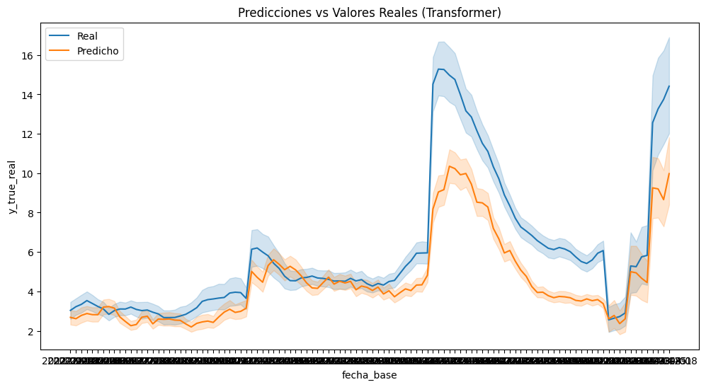
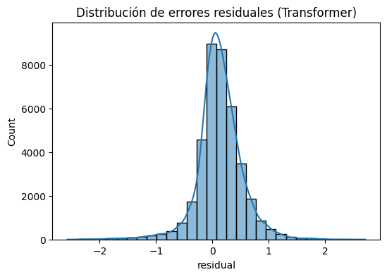
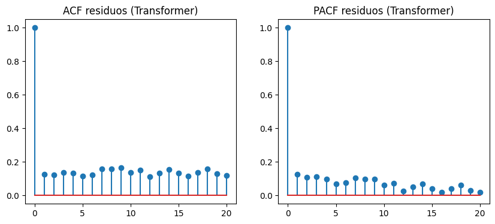
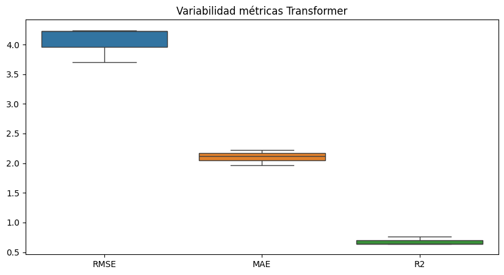
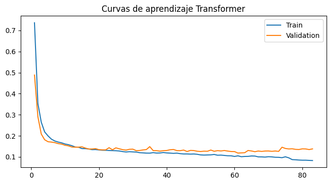
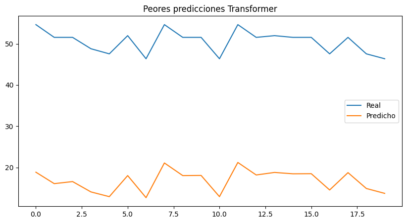

8. Transformer#
8.1. Librerias#
import os
import copy
import random
import optuna
import numpy as np
import pandas as pd
import matplotlib.pyplot as plt
import seaborn as sns
from scipy.stats import ttest_rel, wilcoxon
from statsmodels.stats.diagnostic import acorr_ljungbox
from statsmodels.tsa.stattools import acf, pacf
from sklearn.metrics import mean_squared_error, mean_absolute_error, r2_score
from sklearn.preprocessing import RobustScaler
from sklearn.metrics import (
mean_squared_error,
mean_absolute_error,
r2_score
)
import torch
import torch.nn as nn
import torch.nn.functional as F
from torch.utils.data import (
Dataset,
DataLoader
)
import geopandas as gpd
from libpysal.weights import Queen
import sys
import time
8.2. Configuración Reproducibilidad#
SEEDS = [42, 123, 2024]
DEVICE = torch.device(
"cuda" if torch.cuda.is_available()
else "cpu"
)
print("DEVICE:", DEVICE)
if torch.cuda.is_available():
print("GPU:", torch.cuda.get_device_name(0))
print("Python:", sys.version)
print("Torch:", torch.__version__)
print("Numpy:", np.__version__)
print("Pandas:", pd.__version__)
DEVICE: cuda
GPU: NVIDIA GeForce RTX 5050 Laptop GPU
Python: 3.10.20 (main, Mar 3 2026, 09:24:47) [GCC 13.3.0]
Torch: 2.11.0+cu130
Numpy: 2.2.6
Pandas: 2.3.3
El entorno de ejecución utiliza PyTorch 2.11 con soporte CUDA 13.0 y una GPU NVIDIA GeForce RTX 5050 Laptop, lo que permite acelerar significativamente el entrenamiento de modelos de deep learning. Además, la configuración de semillas múltiples y versiones recientes de librerías como NumPy y Pandas favorece la reproducibilidad y estabilidad experimental.
def set_seed(seed=42):
random.seed(seed)
np.random.seed(seed)
torch.manual_seed(seed)
torch.cuda.manual_seed(seed)
torch.cuda.manual_seed_all(seed)
torch.backends.cudnn.deterministic = True
torch.backends.cudnn.benchmark = False
torch.use_deterministic_algorithms(True)
os.environ["PYTHONHASHSEED"] = str(seed)
print(f"Seed fijada: {seed}")
def seed_worker(worker_id):
worker_seed = torch.initial_seed() % 2**32
np.random.seed(worker_seed)
random.seed(worker_seed)
g = torch.Generator()
Este código implementa una estrategia exhaustiva de reproducibilidad en experimentos con PyTorch, fijando semillas en random, numpy y torch, además de desactivar optimizaciones no deterministas de CUDA (como cudnn.benchmark) para garantizar resultados consistentes entre ejecuciones. Asimismo, se controla la aleatoriedad en los data loaders mediante seed_worker y un generador de PyTorch, asegurando coherencia en el muestreo paralelo de datos.
8.3. Carga de Datos & Preprocesamiento#
8.3.1. Carga de Datos#
df = pd.read_csv("/home/guirlessa/Dl_Proyecto_Dengue/Bases_Datos/df_full.csv")
df.head()
| departamento | fecha_inicio | ano | semana | casos | casos_mujeres | casos_hombres | casos_rural | casos_urbano | (0_5] | ... | precip_lag_12 | precip_lag_20 | temp_c | temp_lag_1 | temp_lag_2 | temp_lag_3 | temp_lag_4 | temp_lag_8 | temp_lag_12 | temp_lag_20 | |
|---|---|---|---|---|---|---|---|---|---|---|---|---|---|---|---|---|---|---|---|---|---|
| 0 | Amazonas | 2012-01-02 | 2012 | 1 | 0.0 | 0 | 0 | 0 | 0 | 0 | ... | 50.983546 | 39.108242 | 24.848668 | 24.890654 | 24.334752 | 24.545618 | 25.345678 | 25.278160 | 25.874930 | 24.364443 |
| 1 | Amazonas | 2012-01-09 | 2012 | 2 | 0.0 | 0 | 0 | 0 | 0 | 0 | ... | 61.818291 | 62.830250 | 24.729721 | 24.848668 | 24.890654 | 24.334752 | 24.545618 | 25.084141 | 25.495665 | 24.971798 |
| 2 | Amazonas | 2012-01-16 | 2012 | 3 | 0.0 | 0 | 0 | 0 | 0 | 0 | ... | 24.950393 | 42.988018 | 24.638674 | 24.729721 | 24.848668 | 24.890654 | 24.334752 | 25.751070 | 25.760539 | 25.304947 |
| 3 | Amazonas | 2012-01-23 | 2012 | 4 | 0.0 | 0 | 0 | 0 | 0 | 0 | ... | 88.169343 | 56.572467 | 25.164008 | 24.638674 | 24.729721 | 24.848668 | 24.890654 | 25.284157 | 25.842089 | 25.166142 |
| 4 | Amazonas | 2012-01-30 | 2012 | 5 | 0.0 | 0 | 0 | 0 | 0 | 0 | ... | 56.271440 | 74.893047 | 24.604644 | 25.164008 | 24.638674 | 24.729721 | 24.848668 | 25.345678 | 25.278160 | 25.312395 |
5 rows × 54 columns
print("El dataframe tiene {0} filas y {1} columnas.".format(df.shape[0], df.shape[1]))
El dataframe tiene 21664 filas y 54 columnas.
df.info()
<class 'pandas.core.frame.DataFrame'>
RangeIndex: 21664 entries, 0 to 21663
Data columns (total 54 columns):
# Column Non-Null Count Dtype
--- ------ -------------- -----
0 departamento 21664 non-null object
1 fecha_inicio 21664 non-null object
2 ano 21664 non-null int64
3 semana 21664 non-null int64
4 casos 21664 non-null float64
5 casos_mujeres 21664 non-null int64
6 casos_hombres 21664 non-null int64
7 casos_rural 21664 non-null int64
8 casos_urbano 21664 non-null int64
9 (0_5] 21664 non-null int64
10 (5_13] 21664 non-null int64
11 (13_26] 21664 non-null int64
12 (26_60] 21664 non-null int64
13 60_mas 21664 non-null int64
14 casos_Contributivo 21664 non-null int64
15 casos_No_asegurado 21664 non-null int64
16 casos_Subsidiado 21664 non-null int64
17 poblacion 21664 non-null float64
18 poblacion_rural 21664 non-null float64
19 poblacion_urbana 21664 non-null float64
20 prop_rural 21664 non-null float64
21 prop_urbana 21664 non-null float64
22 incidencia 21664 non-null float64
23 inc_lag_1 21664 non-null float64
24 inc_lag_2 21664 non-null float64
25 inc_lag_3 21664 non-null float64
26 inc_lag_4 21664 non-null float64
27 inc_lag_8 21664 non-null float64
28 inc_lag_12 21664 non-null float64
29 inc_lag_20 21664 non-null float64
30 humedad_relativa 21664 non-null float64
31 humedad_lag_1 21664 non-null float64
32 humedad_lag_2 21664 non-null float64
33 humedad_lag_3 21664 non-null float64
34 humedad_lag_4 21664 non-null float64
35 humedad_lag_8 21664 non-null float64
36 humedad_lag_12 21664 non-null float64
37 humedad_lag_20 21664 non-null float64
38 precipitacion 21664 non-null float64
39 precip_lag_1 21664 non-null float64
40 precip_lag_2 21664 non-null float64
41 precip_lag_3 21664 non-null float64
42 precip_lag_4 21664 non-null float64
43 precip_lag_8 21664 non-null float64
44 precip_lag_12 21664 non-null float64
45 precip_lag_20 21664 non-null float64
46 temp_c 21664 non-null float64
47 temp_lag_1 21664 non-null float64
48 temp_lag_2 21664 non-null float64
49 temp_lag_3 21664 non-null float64
50 temp_lag_4 21664 non-null float64
51 temp_lag_8 21664 non-null float64
52 temp_lag_12 21664 non-null float64
53 temp_lag_20 21664 non-null float64
dtypes: float64(38), int64(14), object(2)
memory usage: 8.9+ MB
Se observa que la variable fecha_inicio está tipificada como object, cuando en realidad debería corresponder al tipo datetime. Por ello, se procederá a realizar la conversión adecuada para garantizar un manejo correcto de fechas en las etapas posteriores de modelado.
df["fecha_inicio"] = pd.to_datetime(df["fecha_inicio"])
También se procede a organizar los registros del DataFrame según el departamento y la fecha de inicio, con el objetivo de asegurar una estructura temporal coherente que facilite el análisis y el posterior proceso de modelado.
df = df.sort_values(
["departamento", "fecha_inicio"]
).reset_index(drop=True)
8.3.2. Feature Enginering#
Con el fin de incorporar la estacionalidad anual de la enfermedad, se construyeron las variables cíclicas week_sin y week_cos a partir de la semana epidemiológica normalizada. Esta transformación permite representar la naturaleza periódica del calendario, preservando la continuidad entre el final y el inicio de cada año, y facilitando que los modelos capturen patrones estacionales recurrentes asociados a la transmisión del dengue.
weeks_per_year = df.groupby("ano")["semana"].transform("max")
df["week_norm"] = df["semana"] / weeks_per_year
df["week_sin"] = np.sin(2 * np.pi * df["week_norm"])
df["week_cos"] = np.cos(2 * np.pi * df["week_norm"])
Este conjunto de FEATURES define el espacio de variables utilizado para el modelado, combinando información temporal, climática y sociodemográfica. En particular, se incorporan múltiples rezagos (lags) de la incidencia y variables meteorológicas (temperatura, humedad y precipitación) para capturar dependencias temporales y efectos retardados, junto con variables estructurales como población y proporción rural. Adicionalmente, las componentes cíclicas week_sin y week_cos permiten modelar la estacionalidad semanal de forma continua, evitando discontinuidades propias de una codificación directa del tiempo.
FEATURES = [
"inc_lag_1",
"inc_lag_2",
"inc_lag_3",
"inc_lag_4",
"inc_lag_8",
"inc_lag_12",
"inc_lag_20",
"temp_lag_1",
"temp_lag_2",
"temp_lag_4",
"temp_lag_8",
"temp_lag_12",
"temp_lag_20",
"humedad_lag_1",
"humedad_lag_2",
"humedad_lag_4",
"humedad_lag_8",
"humedad_lag_12",
"humedad_lag_20",
"precip_lag_1",
"precip_lag_2",
"precip_lag_4",
"precip_lag_8",
"precip_lag_12",
"precip_lag_20",
"poblacion",
"prop_rural",
"week_sin",
"week_cos"
]
Asimismo, durante el análisis exploratorio de datos se observó que la variable de incidencia presentaba una distribución fuertemente asimétrica hacia la derecha, caracterizada por la presencia de valores extremos asociados a periodos epidémicos. Debido a ello, se consideró necesario aplicar una transformación logarítmica con el objetivo de reducir la asimetría, estabilizar la varianza y facilitar que los modelos capturen de manera más adecuada la estructura temporal y los patrones subyacentes de la incidencia del dengue.
df["incidencia_log"] = np.log1p(df["incidencia"])
TARGET = "incidencia_log"
Con el fin de evaluar el efecto de la transformación logarítmica, se compararon las distribuciones de la incidencia antes y después del preprocesamiento. La distribución original presentaba una marcada asimetría positiva y una alta concentración de valores extremos asociados a periodos epidémicos. Tras aplicar la transformación logarítmica (log1p), se observó una reducción significativa del sesgo y una distribución más equilibrada, lo que contribuye a estabilizar la varianza y facilita la identificación de patrones temporales por parte de los modelos predictivos.
fig, axes = plt.subplots(1, 2, figsize=(14, 5))
sns.histplot(
df["incidencia"],
kde=True,
ax=axes[0]
)
axes[0].set_title("Incidencia Original")
sns.histplot(
np.log1p(df["incidencia"]),
kde=True,
ax=axes[1]
)
axes[1].set_title("Incidencia Transformada (log1p)")
plt.tight_layout()
plt.show()
fig, axes = plt.subplots(1, 2, figsize=(12, 5))
sns.boxplot(y=df["incidencia"], ax=axes[0])
axes[0].set_title("Original")
sns.boxplot(y=np.log1p(df["incidencia"]), ax=axes[1])
axes[1].set_title("Log1p")
plt.tight_layout()
plt.show()


8.3.3. Grafo Espacial#
departments = sorted(df["departamento"].unique())
dept_to_idx = {d: i for i, d in enumerate(departments)}
idx_to_dept = {i: d for d, i in dept_to_idx.items()}
NUM_NODES = len(departments)
gdf = gpd.read_file(
"/home/guirlessa/Dl_Proyecto_Dengue/Covariables/MGN_ADM_DPTO_POLITICO/MGN_ADM_DPTO_POLITICO_limpio.shp"
)
gdf = gdf.set_index("dpto_cnmbr").loc[departments].reset_index()
def build_queen_adj(gdf, departments):
w = Queen.from_dataframe(gdf)
adj = np.zeros(
(len(departments), len(departments)),
dtype=np.float32
)
for i, neighbors in w.neighbors.items():
for j in neighbors:
adj[i, j] = 1.0
np.fill_diagonal(adj, 1.0)
return adj
def normalize_adj(adj):
D = np.diag(np.power(adj.sum(axis=1), -0.5))
return (D @ adj @ D).astype(np.float32)
adj_raw = build_queen_adj(gdf, departments)
adj_normalized = normalize_adj(adj_raw)
adj_matrix = torch.tensor(
adj_normalized,
dtype=torch.float32
).to(DEVICE)
/tmp/ipykernel_162470/1012815684.py:26: FutureWarning: `use_index` defaults to False but will default to True in future. Set True/False directly to control this behavior and silence this warning
w = Queen.from_dataframe(gdf)
8.3.4. Normalización de los Datos#
Se plantea la función scale_data con el fin de aplicar una normalización robusta (RobustScaler) a los datos de entrenamiento y validación, para así preservar la estructura original de series temporales multivariadas. Para ello, primero reestructura los tensores a dos dimensiones para ajustar el escalador únicamente sobre el conjunto de entrenamiento, evitando data leakage, y luego transforma ambos conjuntos antes de devolverlos a su forma original.
def scale_data(X_train, X_val):
scaler = RobustScaler()
_, _, _, n_features = X_train.shape
X_train_2d = X_train.reshape(-1, n_features)
scaler.fit(X_train_2d)
X_train_scaled = scaler.transform(X_train_2d).reshape(X_train.shape)
X_val_scaled = scaler.transform(
X_val.reshape(-1, n_features)
).reshape(X_val.shape)
return X_train_scaled, X_val_scaled, scaler
8.4. Esquema de validación temporal#
Se implementa un esquema de validación cruzada temporal anidada (nested time series cross-validation), en el cual los datos se dividen respetando estrictamente el orden cronológico para evitar data leakage. En el nivel externo, se definen particiones de entrenamiento y prueba por año (2022–2024), simulando un escenario real de predicción futura; mientras que en el nivel interno, el conjunto de entrenamiento se subdivide nuevamente en conjuntos de entrenamiento y validación (2019–2021) para ajuste de hiperparámetros y selección de modelos. Este enfoque garantiza una evaluación más robusta y realista al emular la dinámica de predicción en series temporales.
def create_outer_folds(df, date_col="fecha_inicio"):
folds = []
outer_years = [2022, 2023, 2024]
for test_year in outer_years:
train_df = df[df[date_col].dt.year < test_year].copy()
test_df = df[df[date_col].dt.year == test_year].copy()
folds.append({
"test_year": test_year,
"train_df": train_df,
"test_df": test_df
})
return folds
outer_folds = create_outer_folds(df)
def create_inner_folds(train_df, val_years=[2019, 2020, 2021]):
inner_folds = []
for val_year in val_years:
inner_train = train_df[
train_df["fecha_inicio"].dt.year < val_year
].copy()
inner_val = train_df[
train_df["fecha_inicio"].dt.year == val_year
].copy()
inner_folds.append({
"val_year": val_year,
"inner_train": inner_train,
"inner_val": inner_val
})
return inner_folds
# ============================================================
# CREATE WINDOWS
# ============================================================
def create_windows(
df,
features,
target,
window_size=12,
horizon=4
):
pivot_features = []
for feat in features:
pivot = df.pivot_table(
index="fecha_inicio",
columns="departamento",
values=feat
).sort_index()
pivot_features.append(pivot.values)
X_all = np.stack(pivot_features, axis=-1)
target_pivot = df.pivot_table(
index="fecha_inicio",
columns="departamento",
values=target
).sort_index()
y_all = target_pivot.values
dates = target_pivot.index.values
X = []
y = []
base_dates = []
total_steps = len(dates)
for i in range(total_steps - window_size - horizon + 1):
X.append(X_all[i : i + window_size])
y.append(y_all[i + window_size : i + window_size + horizon])
base_dates.append(dates[i + window_size - 1])
X = np.array(X, dtype=np.float32)
y = np.array(y, dtype=np.float32)
base_dates = np.array(base_dates)
return X, y, base_dates
8.5. Ventanas de Tiempo#
Esta función implementa la construcción del conjunto de datos supervisado para modelado espaciotemporal, mediante la transformación de datos tabulares en tensores estructurados compatibles con arquitecturas de aprendizaje profundo. En primer lugar, reorganiza las variables explicativas y la variable objetivo a través de tablas pivote indexadas por fecha y departamento, asegurando consistencia en la representación espacial. Posteriormente, se unifican las variables en un tensor multivariado y se genera una estructura de secuencias mediante una estrategia de ventanas deslizantes (sliding window), en la que se define explícitamente un historial de observación (window_size) y un horizonte de predicción (horizon). Finalmente, se preserva información auxiliar como las fechas de referencia y el orden de los departamentos, lo cual es fundamental para mantener la coherencia temporal y espacial del conjunto de datos.
def create_windows(
df,
features,
target,
window_size=12,
horizon=4
):
pivot_features = []
for feat in features:
pivot = df.pivot_table(
index="fecha_inicio",
columns="departamento",
values=feat
).sort_index()
pivot_features.append(pivot.values)
X_all = np.stack(pivot_features, axis=-1)
target_pivot = df.pivot_table(
index="fecha_inicio",
columns="departamento",
values=target
).sort_index()
y_all = target_pivot.values
dates = target_pivot.index.values
X = []
y = []
base_dates = []
total_steps = len(dates)
for i in range(total_steps - window_size - horizon + 1):
X.append(X_all[i : i + window_size])
y.append(y_all[i + window_size : i + window_size + horizon])
base_dates.append(dates[i + window_size - 1])
X = np.array(X, dtype=np.float32)
y = np.array(y, dtype=np.float32)
base_dates = np.array(base_dates)
return X, y, base_dates
8.6. Funciones para el Modelado#
La clase EarlyStopping introduce un mecanismo de regularización basado en la detención anticipada del entrenamiento cuando la pérdida de validación deja de mejorar durante un número determinado de épocas (patience), lo cual ayuda a prevenir sobreajuste.
class EarlyStopping:
def __init__(self, patience=20):
self.patience = patience
self.best_loss = np.inf
self.counter = 0
self.stop = False
def step(self, val_loss):
if val_loss < self.best_loss:
self.best_loss = val_loss
self.counter = 0
else:
self.counter += 1
if self.counter >= self.patience:
self.stop = True
Por otro lado, train_one_epoch y validate_one_epoch definen los ciclos estándar de entrenamiento y evaluación por época, respectivamente: la primera realiza la optimización del modelo mediante retropropagación del error, actualización de parámetros y recorte de gradientes para estabilizar el aprendizaje, mientras que la segunda evalúa el desempeño del modelo en modo inferencia sin actualización de pesos, permitiendo monitorear su generalización.
def train_one_epoch(model, dataloader, criterion, optimizer, device):
model.train()
total_loss = 0
for X_batch, y_batch in dataloader:
X_batch = X_batch.to(device)
y_batch = y_batch.to(device)
optimizer.zero_grad()
pred = model(X_batch)
loss = criterion(pred, y_batch)
loss.backward()
nn.utils.clip_grad_norm_(model.parameters(), max_norm=1.0)
optimizer.step()
total_loss += loss.item()
return total_loss / len(dataloader)
def validate_one_epoch(model, dataloader, criterion, device):
model.eval()
total_loss = 0
with torch.no_grad():
for X_batch, y_batch in dataloader:
X_batch = X_batch.to(device)
y_batch = y_batch.to(device)
pred = model(X_batch)
loss = criterion(pred, y_batch)
total_loss += loss.item()
return total_loss / len(dataloader)
8.7. Arquitectura#
class Dataset(Dataset):
def __init__(self, X, y):
self.X = torch.tensor(X, dtype=torch.float32)
self.y = torch.tensor(y, dtype=torch.float32)
def __len__(self):
return len(self.X)
def __getitem__(self, idx):
return self.X[idx], self.y[idx]
class SpatioTemporalTransformer(nn.Module):
def __init__(
self,
num_nodes,
in_channels,
hidden_size=128,
num_layers=2,
nhead=4,
horizon=4,
dropout=0.1
):
super().__init__()
self.num_nodes = num_nodes
self.horizon = horizon
self.hidden_size = hidden_size
self.input_proj = nn.Linear(in_channels, hidden_size)
self.time_emb = nn.Parameter(torch.randn(1, 50, hidden_size)) # max T
self.node_emb = nn.Parameter(torch.randn(1, num_nodes, hidden_size))
encoder_layer = nn.TransformerEncoderLayer(
d_model=hidden_size,
nhead=nhead,
dim_feedforward=hidden_size * 4,
dropout=dropout,
batch_first=True
)
self.encoder = nn.TransformerEncoder(
encoder_layer,
num_layers=num_layers
)
self.head = nn.Linear(hidden_size, horizon)
self.dropout = nn.Dropout(dropout)
def forward(self, x, adj=None):
B, T, N, F = x.shape
x = self.input_proj(x)
x = x.reshape(B, T * N, self.hidden_size)
device = x.device
seq_len = x.size(1)
position = torch.arange(seq_len, device=device).unsqueeze(0).unsqueeze(-1)
div_term = torch.exp(
torch.arange(0, self.hidden_size, 2, device=device)
* (-torch.log(torch.tensor(10000.0, device=device)) / self.hidden_size)
)
pe = torch.zeros(seq_len, self.hidden_size, device=device)
pe[:, 0::2] = torch.sin(position * div_term)
pe[:, 1::2] = torch.cos(position * div_term)
x = x + pe.unsqueeze(0)
x = self.encoder(x)
x = x.reshape(B, T, N, self.hidden_size)
x = x[:, -1, :, :]
out = self.head(x)
return out.permute(0, 2, 1)
8.8. Optimización de Hiperparametros#
Inicializamos el entorno experimental del pipeline de optimización y evaluación del modelo, definiendo estructuras globales para almacenar resultados de múltiples etapas del experimento (tuning, validación cruzada, entrenamiento y evaluación final).
ALL_OPTUNA_TRIALS = []
ALL_OPTUNA_FOLDS = []
ALL_RESIDUALS = []
ALL_INFERENCE_TIME = []
ALL_BEST_PARAMS = []
ALL_RESULTS = []
ALL_PREDICTIONS = []
ALL_LOSSES = []
TUNING_DF = df[df["fecha_inicio"].dt.year < 2022].copy()
INNER_FOLDS_TUNING = create_inner_folds(
TUNING_DF,
val_years=[2019, 2020, 2021]
)
Ahora, definimos objetivo de optimización para el ajuste de hiperparámetros mediante Optuna, evaluando distintas configuraciones del modelo Transformer. Para cada trial, se muestrean hiperparámetros como tamaño de ventana, tasa de aprendizaje, tamaño de lote, número de capas, unidades ocultas, tamaño de kernel y dropout, y se evalúan mediante validación cruzada en los inner folds. En cada partición se entrena el modelo, se aplica early stopping y se calcula el RMSE sobre el conjunto de validación, retornando finalmente el error promedio como métrica a minimizar.
def objective(trial):
window_size = trial.suggest_categorical(
"window_size", [4, 8, 12, 16]
)
learning_rate = trial.suggest_float(
"learning_rate", 1e-4, 1e-2, log=True
)
batch_size = trial.suggest_categorical(
"batch_size", [16, 32]
)
hidden_size = trial.suggest_categorical(
"hidden_size", [32, 64, 128]
)
num_layers = trial.suggest_int(
"num_layers", 1, 3
)
kernel_size = trial.suggest_categorical(
"kernel_size", [3, 5, 7]
)
dropout = trial.suggest_float(
"dropout", 0.0, 0.4, step=0.1
)
rmse_folds = []
fold_errors = []
for fold_id, fold in enumerate(INNER_FOLDS_TUNING):
X_train, y_train, _ = create_windows(
fold["inner_train"],
FEATURES,
TARGET,
window_size,
4
)
X_val, y_val, _ = create_windows(
fold["inner_val"],
FEATURES,
TARGET,
window_size,
4
)
X_train_scaled, X_val_scaled, _ = scale_data(X_train, X_val)
train_dataset = Dataset(X_train_scaled, y_train)
val_dataset = Dataset(X_val_scaled, y_val)
g.manual_seed(seed)
train_loader = DataLoader(
train_dataset,
batch_size=batch_size,
shuffle=False,
worker_init_fn=seed_worker,
generator=g
)
val_loader = DataLoader(
val_dataset,
batch_size=batch_size,
shuffle=False
)
model = SpatioTemporalTransformer(
num_nodes=NUM_NODES,
in_channels=len(FEATURES),
hidden_size=hidden_size,
num_layers=num_layers,
nhead=4,
horizon=4,
dropout=dropout
).to(DEVICE)
criterion = nn.MSELoss()
optimizer = torch.optim.Adam(
model.parameters(),
lr=learning_rate
)
early_stopping = EarlyStopping(patience=10)
for epoch in range(50):
train_one_epoch(
model, train_loader, criterion, optimizer, DEVICE
)
val_loss = validate_one_epoch(
model, val_loader, criterion, DEVICE
)
early_stopping.step(val_loss)
if early_stopping.stop:
break
model.eval()
preds = []
trues = []
with torch.no_grad():
for X_batch, y_batch in val_loader:
pred = model(X_batch.to(DEVICE), adj_matrix)
preds.append(pred.cpu().numpy())
trues.append(y_batch.numpy())
preds = np.concatenate(preds)
trues = np.concatenate(trues)
errors = trues - preds
rmse = np.sqrt(
mean_squared_error(trues.flatten(), preds.flatten())
)
rmse_folds.append(rmse)
fold_errors.append({
"trial": trial.number,
"seed": seed,
"fold": fold_id,
"rmse": rmse,
"error_mean": float(np.mean(errors)),
"error_std": float(np.std(errors))
})
rmse_mean = float(np.mean(rmse_folds))
rmse_std = float(np.std(rmse_folds))
ALL_OPTUNA_TRIALS.append({
"trial": trial.number,
"seed": seed,
"window_size": window_size,
"learning_rate": learning_rate,
"batch_size": batch_size,
"hidden_size": hidden_size,
"num_layers": num_layers,
"kernel_size": kernel_size,
"dropout": dropout,
"rmse_mean": rmse_mean,
"rmse_std": rmse_std
})
ALL_OPTUNA_FOLDS.extend(fold_errors)
trial.set_user_attr("rmse_folds", rmse_folds)
trial.set_user_attr("rmse_std", rmse_std)
return rmse_mean
8.9. Pipeline Train, Validation & Test#
for seed in SEEDS:
print("\n")
print("="*100)
print(f"SEED {seed}")
print("="*100)
set_seed(seed)
sampler = optuna.samplers.TPESampler(seed=seed)
study = optuna.create_study(
direction="minimize",
sampler=sampler
)
study.optimize(objective, n_trials=30)
best_params = study.best_trial.params
print(f"\nMejores hiperparámetros para seed {seed}:")
print(best_params)
pd.DataFrame([{"seed": seed, **best_params}]).to_csv(
f"/home/guirlessa/Dl_Proyecto_Dengue/Modelos/Transformer/transformer_best_params_seed_{seed}.csv",
index=False
)
ALL_BEST_PARAMS.append({"seed": seed, **best_params})
for outer_idx, outer_fold in enumerate(outer_folds):
print("\n")
print("="*100)
print(f"OUTER FOLD {outer_idx+1} | Test year: {outer_fold['test_year']}")
print("="*100)
outer_train_df = outer_fold["train_df"]
final_test_df = outer_fold["test_df"]
window_size = best_params["window_size"]
hidden_size = best_params["hidden_size"]
num_layers = best_params["num_layers"]
kernel_size = best_params["kernel_size"]
dropout = best_params["dropout"]
learning_rate = best_params["learning_rate"]
batch_size = best_params["batch_size"]
val_year = outer_train_df["fecha_inicio"].dt.year.max()
final_train_df = outer_train_df[
outer_train_df["fecha_inicio"].dt.year < val_year
]
final_val_df = outer_train_df[
outer_train_df["fecha_inicio"].dt.year == val_year
]
X_train, y_train, train_dates = create_windows(
final_train_df, FEATURES, TARGET, window_size, 4
)
X_val, y_val, val_dates = create_windows(
final_val_df, FEATURES, TARGET, window_size, 4
)
X_test, y_test, test_dates = create_windows(
final_test_df, FEATURES, TARGET, window_size, 4
)
X_train_scaled, X_val_scaled, scaler = scale_data(X_train, X_val)
X_test_scaled = scaler.transform(
X_test.reshape(-1, X_test.shape[-1])
).reshape(X_test.shape)
train_dataset = Dataset(X_train_scaled, y_train)
val_dataset = Dataset(X_val_scaled, y_val)
test_dataset = Dataset(X_test_scaled, y_test)
train_loader = DataLoader(train_dataset, batch_size=batch_size, shuffle=False)
val_loader = DataLoader(val_dataset, batch_size=batch_size, shuffle=False)
test_loader = DataLoader(test_dataset, batch_size=batch_size, shuffle=False)
model = SpatioTemporalTransformer(
num_nodes=NUM_NODES,
in_channels=len(FEATURES),
hidden_size=hidden_size,
num_layers=num_layers,
nhead=4,
horizon=4,
dropout=dropout
).to(DEVICE)
criterion = nn.MSELoss()
optimizer = torch.optim.Adam(
model.parameters(),
lr=learning_rate
)
scheduler = torch.optim.lr_scheduler.ReduceLROnPlateau(
optimizer, mode="min", factor=0.5, patience=10
)
early_stopping = EarlyStopping(patience=20)
best_model = None
best_loss = np.inf
total_train_time = 0.0
for epoch in range(300):
start_epoch = time.time()
train_loss = train_one_epoch(
model, train_loader, criterion, optimizer, DEVICE
)
val_loss = validate_one_epoch(
model, val_loader, criterion, DEVICE
)
scheduler.step(val_loss)
epoch_time = time.time() - start_epoch
total_train_time += epoch_time
print(
f"Epoch {epoch+1}"
f" | Train {train_loss:.4f}"
f" | Val {val_loss:.4f}"
f" | Time {epoch_time:.2f}s"
)
ALL_LOSSES.append({
"seed": seed,
"outer_fold": outer_idx + 1,
"test_year": outer_fold["test_year"],
"epoch": epoch + 1,
"train_loss": train_loss,
"val_loss": val_loss,
"epoch_time": epoch_time
})
if val_loss < best_loss:
best_loss = val_loss
best_model = copy.deepcopy(model)
early_stopping.step(val_loss)
if early_stopping.stop:
break
model = best_model
torch.save(
model.state_dict(),
f"/home/guirlessa/Dl_Proyecto_Dengue/Modelos/Transformer/"
f"transformer_seed_{seed}_outer_fold_{outer_idx+1}.pt"
)
model.eval()
start_inference = time.time()
predictions = []
targets = []
with torch.no_grad():
for X_batch, y_batch in test_loader:
X_batch = X_batch.to(DEVICE)
pred = model(X_batch)
predictions.append(pred.cpu().numpy())
targets.append(y_batch.numpy())
inference_time = time.time() - start_inference
predictions = np.concatenate(predictions)
targets = np.concatenate(targets)
mse = mean_squared_error(targets.flatten(), predictions.flatten())
rmse = np.sqrt(mse)
mae = mean_absolute_error(targets.flatten(), predictions.flatten())
r2 = r2_score(targets.flatten(), predictions.flatten())
ALL_RESULTS.append({
"seed": seed,
"outer_fold": outer_idx + 1,
"test_year": outer_fold["test_year"],
"mse": mse,
"rmse": rmse,
"mae": mae,
"r2": r2,
"train_time": total_train_time,
"inference_time": inference_time
})
ALL_INFERENCE_TIME.append({
"seed": seed,
"outer_fold": outer_idx + 1,
"test_year": outer_fold["test_year"],
"inference_time": inference_time,
"train_time": total_train_time
})
rows = []
for i in range(len(predictions)):
for h in range(4):
for node in range(NUM_NODES):
y_true = targets[i, h, node]
y_pred = predictions[i, h, node]
residual = y_true - y_pred
rows.append({
"seed": seed,
"outer_fold": outer_idx + 1,
"test_year": outer_fold["test_year"],
"departamento": idx_to_dept[node],
"fecha_base": test_dates[i],
"horizonte": h + 1,
"y_true_log": y_true,
"y_pred_log": y_pred,
"y_true_real": np.expm1(y_true),
"y_pred_real": np.expm1(y_pred),
"residual": residual,
"abs_error": abs(residual),
"sq_error": residual ** 2
})
ALL_RESIDUALS.append({
"seed": seed,
"outer_fold": outer_idx + 1,
"test_year": outer_fold["test_year"],
"departamento": idx_to_dept[node],
"fecha_base": test_dates[i],
"horizonte": h + 1,
"residual": residual
})
ALL_PREDICTIONS.append(pd.DataFrame(rows))
[I 2026-06-01 13:56:27,618] A new study created in memory with name: no-name-5cb32175-1498-45b0-9b25-c4710b10fc02
====================================================================================================
SEED 42
====================================================================================================
Seed fijada: 42
[I 2026-06-01 13:56:50,156] Trial 0 finished with value: 0.44550756011259773 and parameters: {'window_size': 8, 'learning_rate': 0.0002051338263087451, 'batch_size': 16, 'hidden_size': 32, 'num_layers': 1, 'kernel_size': 3, 'dropout': 0.0}. Best is trial 0 with value: 0.44550756011259773.
[I 2026-06-01 13:57:21,993] Trial 1 finished with value: 0.4803451877046448 and parameters: {'window_size': 12, 'learning_rate': 0.0003823475224675188, 'batch_size': 16, 'hidden_size': 128, 'num_layers': 3, 'kernel_size': 7, 'dropout': 0.0}. Best is trial 0 with value: 0.44550756011259773.
[I 2026-06-01 13:57:38,264] Trial 2 finished with value: 0.42499712527698547 and parameters: {'window_size': 16, 'learning_rate': 0.00853618986286683, 'batch_size': 16, 'hidden_size': 64, 'num_layers': 1, 'kernel_size': 7, 'dropout': 0.1}. Best is trial 2 with value: 0.42499712527698547.
[I 2026-06-01 13:58:10,741] Trial 3 finished with value: 0.4359181112384838 and parameters: {'window_size': 4, 'learning_rate': 0.00023426581058204064, 'batch_size': 16, 'hidden_size': 32, 'num_layers': 3, 'kernel_size': 5, 'dropout': 0.1}. Best is trial 2 with value: 0.42499712527698547.
[I 2026-06-01 13:58:45,675] Trial 4 finished with value: 0.5085022807553049 and parameters: {'window_size': 12, 'learning_rate': 0.0003646439558980723, 'batch_size': 16, 'hidden_size': 128, 'num_layers': 3, 'kernel_size': 7, 'dropout': 0.30000000000000004}. Best is trial 2 with value: 0.42499712527698547.
[I 2026-06-01 13:59:11,974] Trial 5 finished with value: 0.40722894974295754 and parameters: {'window_size': 8, 'learning_rate': 0.0001705053926026929, 'batch_size': 16, 'hidden_size': 32, 'num_layers': 1, 'kernel_size': 7, 'dropout': 0.2}. Best is trial 5 with value: 0.40722894974295754.
[I 2026-06-01 13:59:23,048] Trial 6 finished with value: 0.38801539822535186 and parameters: {'window_size': 12, 'learning_rate': 0.003482846706526885, 'batch_size': 32, 'hidden_size': 32, 'num_layers': 1, 'kernel_size': 3, 'dropout': 0.4}. Best is trial 6 with value: 0.38801539822535186.
[I 2026-06-01 14:00:20,955] Trial 7 finished with value: 0.4253336688696923 and parameters: {'window_size': 12, 'learning_rate': 0.00014254757044027455, 'batch_size': 16, 'hidden_size': 32, 'num_layers': 3, 'kernel_size': 7, 'dropout': 0.2}. Best is trial 6 with value: 0.38801539822535186.
[I 2026-06-01 14:00:44,532] Trial 8 finished with value: 0.40915504908038774 and parameters: {'window_size': 8, 'learning_rate': 0.000285673742984719, 'batch_size': 32, 'hidden_size': 32, 'num_layers': 2, 'kernel_size': 7, 'dropout': 0.4}. Best is trial 6 with value: 0.38801539822535186.
[I 2026-06-01 14:01:00,648] Trial 9 finished with value: 0.47096932904671335 and parameters: {'window_size': 12, 'learning_rate': 0.008781408196485976, 'batch_size': 16, 'hidden_size': 32, 'num_layers': 1, 'kernel_size': 3, 'dropout': 0.1}. Best is trial 6 with value: 0.38801539822535186.
[I 2026-06-01 14:01:33,296] Trial 10 finished with value: 0.3995621504639568 and parameters: {'window_size': 16, 'learning_rate': 0.002510441004250465, 'batch_size': 32, 'hidden_size': 64, 'num_layers': 2, 'kernel_size': 3, 'dropout': 0.4}. Best is trial 6 with value: 0.38801539822535186.
[I 2026-06-01 14:02:04,193] Trial 11 finished with value: 0.4683974535633297 and parameters: {'window_size': 16, 'learning_rate': 0.003085473344630512, 'batch_size': 32, 'hidden_size': 64, 'num_layers': 2, 'kernel_size': 3, 'dropout': 0.4}. Best is trial 6 with value: 0.38801539822535186.
[I 2026-06-01 14:02:43,016] Trial 12 finished with value: 0.37561652294884446 and parameters: {'window_size': 16, 'learning_rate': 0.0017522967285273662, 'batch_size': 32, 'hidden_size': 64, 'num_layers': 2, 'kernel_size': 3, 'dropout': 0.4}. Best is trial 12 with value: 0.37561652294884446.
[I 2026-06-01 14:02:57,240] Trial 13 finished with value: 0.40782403790218363 and parameters: {'window_size': 4, 'learning_rate': 0.0012228319210925516, 'batch_size': 32, 'hidden_size': 64, 'num_layers': 2, 'kernel_size': 3, 'dropout': 0.30000000000000004}. Best is trial 12 with value: 0.37561652294884446.
[I 2026-06-01 14:03:14,161] Trial 14 finished with value: 0.4133423751253404 and parameters: {'window_size': 16, 'learning_rate': 0.0027324685838808938, 'batch_size': 32, 'hidden_size': 64, 'num_layers': 1, 'kernel_size': 5, 'dropout': 0.30000000000000004}. Best is trial 12 with value: 0.37561652294884446.
[I 2026-06-01 14:03:32,346] Trial 15 finished with value: 0.41645900930683616 and parameters: {'window_size': 12, 'learning_rate': 0.0011434853385562413, 'batch_size': 32, 'hidden_size': 128, 'num_layers': 2, 'kernel_size': 3, 'dropout': 0.4}. Best is trial 12 with value: 0.37561652294884446.
[I 2026-06-01 14:03:49,708] Trial 16 finished with value: 0.3959900807405375 and parameters: {'window_size': 16, 'learning_rate': 0.004660473427410497, 'batch_size': 32, 'hidden_size': 64, 'num_layers': 1, 'kernel_size': 3, 'dropout': 0.30000000000000004}. Best is trial 12 with value: 0.37561652294884446.
[I 2026-06-01 14:03:59,799] Trial 17 finished with value: 0.39851102168439345 and parameters: {'window_size': 4, 'learning_rate': 0.0006299960164649499, 'batch_size': 32, 'hidden_size': 64, 'num_layers': 2, 'kernel_size': 3, 'dropout': 0.2}. Best is trial 12 with value: 0.37561652294884446.
[I 2026-06-01 14:04:18,323] Trial 18 finished with value: 0.38835235482064073 and parameters: {'window_size': 12, 'learning_rate': 0.0016124084896173211, 'batch_size': 32, 'hidden_size': 32, 'num_layers': 1, 'kernel_size': 5, 'dropout': 0.4}. Best is trial 12 with value: 0.37561652294884446.
[I 2026-06-01 14:04:59,930] Trial 19 finished with value: 0.37452173027107527 and parameters: {'window_size': 16, 'learning_rate': 0.0006687902666583148, 'batch_size': 32, 'hidden_size': 128, 'num_layers': 2, 'kernel_size': 3, 'dropout': 0.30000000000000004}. Best is trial 19 with value: 0.37452173027107527.
[I 2026-06-01 14:05:32,678] Trial 20 finished with value: 0.3982621389999344 and parameters: {'window_size': 16, 'learning_rate': 0.0006729579221100337, 'batch_size': 32, 'hidden_size': 128, 'num_layers': 2, 'kernel_size': 3, 'dropout': 0.30000000000000004}. Best is trial 19 with value: 0.37452173027107527.
[I 2026-06-01 14:06:04,640] Trial 21 finished with value: 0.6211292834010624 and parameters: {'window_size': 16, 'learning_rate': 0.005079222005157886, 'batch_size': 32, 'hidden_size': 128, 'num_layers': 2, 'kernel_size': 3, 'dropout': 0.4}. Best is trial 19 with value: 0.37452173027107527.
[I 2026-06-01 14:06:48,324] Trial 22 finished with value: 0.4108830051239578 and parameters: {'window_size': 16, 'learning_rate': 0.0019061388199146001, 'batch_size': 32, 'hidden_size': 128, 'num_layers': 2, 'kernel_size': 3, 'dropout': 0.30000000000000004}. Best is trial 19 with value: 0.37452173027107527.
[I 2026-06-01 14:07:35,865] Trial 23 finished with value: 0.4243842960301369 and parameters: {'window_size': 16, 'learning_rate': 0.0008572474094137634, 'batch_size': 32, 'hidden_size': 128, 'num_layers': 3, 'kernel_size': 3, 'dropout': 0.4}. Best is trial 19 with value: 0.37452173027107527.
[I 2026-06-01 14:08:05,946] Trial 24 finished with value: 0.4541912761619491 and parameters: {'window_size': 16, 'learning_rate': 0.00010112738112247534, 'batch_size': 32, 'hidden_size': 32, 'num_layers': 1, 'kernel_size': 3, 'dropout': 0.30000000000000004}. Best is trial 19 with value: 0.37452173027107527.
[I 2026-06-01 14:08:25,335] Trial 25 finished with value: 0.6224503046909072 and parameters: {'window_size': 12, 'learning_rate': 0.00453206637488298, 'batch_size': 32, 'hidden_size': 128, 'num_layers': 2, 'kernel_size': 5, 'dropout': 0.4}. Best is trial 19 with value: 0.37452173027107527.
[I 2026-06-01 14:08:41,941] Trial 26 finished with value: 0.3837326815776903 and parameters: {'window_size': 4, 'learning_rate': 0.000557891315191515, 'batch_size': 32, 'hidden_size': 64, 'num_layers': 3, 'kernel_size': 3, 'dropout': 0.30000000000000004}. Best is trial 19 with value: 0.37452173027107527.
[I 2026-06-01 14:09:02,697] Trial 27 finished with value: 0.4099600343072418 and parameters: {'window_size': 4, 'learning_rate': 0.0005327728346858338, 'batch_size': 32, 'hidden_size': 64, 'num_layers': 3, 'kernel_size': 3, 'dropout': 0.2}. Best is trial 19 with value: 0.37452173027107527.
[I 2026-06-01 14:09:18,545] Trial 28 finished with value: 0.409595088883663 and parameters: {'window_size': 4, 'learning_rate': 0.0009383174015126098, 'batch_size': 32, 'hidden_size': 64, 'num_layers': 3, 'kernel_size': 3, 'dropout': 0.30000000000000004}. Best is trial 19 with value: 0.37452173027107527.
[I 2026-06-01 14:09:41,989] Trial 29 finished with value: 0.38386752838036137 and parameters: {'window_size': 8, 'learning_rate': 0.0004673695419883186, 'batch_size': 32, 'hidden_size': 64, 'num_layers': 2, 'kernel_size': 3, 'dropout': 0.30000000000000004}. Best is trial 19 with value: 0.37452173027107527.
Mejores hiperparámetros para seed 42:
{'window_size': 16, 'learning_rate': 0.0006687902666583148, 'batch_size': 32, 'hidden_size': 128, 'num_layers': 2, 'kernel_size': 3, 'dropout': 0.30000000000000004}
====================================================================================================
OUTER FOLD 1 | Test year: 2022
====================================================================================================
Epoch 1 | Train 0.8387 | Val 0.5625 | Time 0.51s
Epoch 2 | Train 0.3893 | Val 0.2842 | Time 0.48s
Epoch 3 | Train 0.2793 | Val 0.1403 | Time 0.48s
Epoch 4 | Train 0.1921 | Val 0.1309 | Time 0.48s
Epoch 5 | Train 0.1648 | Val 0.1126 | Time 0.48s
Epoch 6 | Train 0.1559 | Val 0.1434 | Time 0.49s
Epoch 7 | Train 0.1517 | Val 0.1284 | Time 0.49s
Epoch 8 | Train 0.1700 | Val 0.1709 | Time 0.48s
Epoch 9 | Train 0.1511 | Val 0.1493 | Time 0.48s
Epoch 10 | Train 0.1558 | Val 0.1182 | Time 0.48s
Epoch 11 | Train 0.1635 | Val 0.1236 | Time 0.49s
Epoch 12 | Train 0.1635 | Val 0.1154 | Time 0.48s
Epoch 13 | Train 0.1529 | Val 0.1297 | Time 0.48s
Epoch 14 | Train 0.1559 | Val 0.1192 | Time 0.48s
Epoch 15 | Train 0.1434 | Val 0.1305 | Time 0.48s
Epoch 16 | Train 0.1432 | Val 0.1070 | Time 0.48s
Epoch 17 | Train 0.1459 | Val 0.1025 | Time 0.48s
Epoch 18 | Train 0.1353 | Val 0.1081 | Time 0.48s
Epoch 19 | Train 0.1390 | Val 0.1253 | Time 0.48s
Epoch 20 | Train 0.1306 | Val 0.1199 | Time 0.48s
Epoch 21 | Train 0.1347 | Val 0.1042 | Time 0.48s
Epoch 22 | Train 0.1318 | Val 0.1135 | Time 0.48s
Epoch 23 | Train 0.1285 | Val 0.1037 | Time 0.49s
Epoch 24 | Train 0.1275 | Val 0.1197 | Time 0.49s
Epoch 25 | Train 0.1378 | Val 0.1704 | Time 0.49s
Epoch 26 | Train 0.1474 | Val 0.1186 | Time 0.49s
Epoch 27 | Train 0.1337 | Val 0.1039 | Time 0.49s
Epoch 28 | Train 0.1273 | Val 0.1015 | Time 0.49s
Epoch 29 | Train 0.1265 | Val 0.0992 | Time 0.49s
Epoch 30 | Train 0.1349 | Val 0.1218 | Time 0.49s
Epoch 31 | Train 0.1252 | Val 0.1073 | Time 0.48s
Epoch 32 | Train 0.1221 | Val 0.1158 | Time 0.49s
Epoch 33 | Train 0.1187 | Val 0.1101 | Time 0.49s
Epoch 34 | Train 0.1210 | Val 0.1083 | Time 0.49s
Epoch 35 | Train 0.1175 | Val 0.1687 | Time 0.49s
Epoch 36 | Train 0.1258 | Val 0.0984 | Time 0.48s
Epoch 37 | Train 0.1214 | Val 0.0985 | Time 0.48s
Epoch 38 | Train 0.1175 | Val 0.1065 | Time 3.38s
Epoch 39 | Train 0.1308 | Val 0.1377 | Time 0.52s
Epoch 40 | Train 0.1188 | Val 0.1120 | Time 0.51s
Epoch 41 | Train 0.1196 | Val 0.1223 | Time 0.52s
Epoch 42 | Train 0.1193 | Val 0.1322 | Time 0.52s
Epoch 43 | Train 0.1231 | Val 0.0936 | Time 0.53s
Epoch 44 | Train 0.1179 | Val 0.1020 | Time 0.53s
Epoch 45 | Train 0.1127 | Val 0.1180 | Time 0.51s
Epoch 46 | Train 0.1181 | Val 0.1122 | Time 0.53s
Epoch 47 | Train 0.1168 | Val 0.1390 | Time 0.50s
Epoch 48 | Train 0.1281 | Val 0.1074 | Time 0.49s
Epoch 49 | Train 0.1163 | Val 0.0957 | Time 0.49s
Epoch 50 | Train 0.1111 | Val 0.1067 | Time 0.49s
Epoch 51 | Train 0.1061 | Val 0.1044 | Time 0.49s
Epoch 52 | Train 0.1086 | Val 0.1036 | Time 0.49s
Epoch 53 | Train 0.1115 | Val 0.1487 | Time 0.49s
Epoch 54 | Train 0.1289 | Val 0.1009 | Time 0.48s
Epoch 55 | Train 0.1142 | Val 0.0964 | Time 0.48s
Epoch 56 | Train 0.1053 | Val 0.1072 | Time 0.48s
Epoch 57 | Train 0.1014 | Val 0.1014 | Time 0.48s
Epoch 58 | Train 0.0999 | Val 0.0967 | Time 0.48s
Epoch 59 | Train 0.0952 | Val 0.1032 | Time 0.47s
Epoch 60 | Train 0.0946 | Val 0.1105 | Time 0.48s
Epoch 61 | Train 0.0963 | Val 0.1010 | Time 0.48s
Epoch 62 | Train 0.0933 | Val 0.0960 | Time 0.48s
Epoch 63 | Train 0.0941 | Val 0.1092 | Time 0.48s
====================================================================================================
OUTER FOLD 2 | Test year: 2023
====================================================================================================
Epoch 1 | Train 0.8177 | Val 0.4980 | Time 0.55s
Epoch 2 | Train 0.3355 | Val 0.2471 | Time 0.52s
Epoch 3 | Train 0.2319 | Val 0.1781 | Time 0.53s
Epoch 4 | Train 0.1891 | Val 0.1634 | Time 0.53s
Epoch 5 | Train 0.1745 | Val 0.1648 | Time 0.53s
Epoch 6 | Train 0.1687 | Val 0.1473 | Time 0.53s
Epoch 7 | Train 0.1674 | Val 0.1631 | Time 0.53s
Epoch 8 | Train 0.1634 | Val 0.1510 | Time 0.53s
Epoch 9 | Train 0.1822 | Val 0.1660 | Time 0.53s
Epoch 10 | Train 0.1763 | Val 0.1578 | Time 0.53s
Epoch 11 | Train 0.1576 | Val 0.1501 | Time 0.53s
Epoch 12 | Train 0.1453 | Val 0.1381 | Time 0.53s
Epoch 13 | Train 0.1437 | Val 0.1449 | Time 0.53s
Epoch 14 | Train 0.1385 | Val 0.1621 | Time 0.53s
Epoch 15 | Train 0.1378 | Val 0.1406 | Time 0.53s
Epoch 16 | Train 0.1479 | Val 0.1345 | Time 0.53s
Epoch 17 | Train 0.1488 | Val 0.1346 | Time 0.53s
Epoch 18 | Train 0.1462 | Val 0.1537 | Time 0.53s
Epoch 19 | Train 0.1507 | Val 0.1360 | Time 0.53s
Epoch 20 | Train 0.1430 | Val 0.1377 | Time 0.53s
Epoch 21 | Train 0.1371 | Val 0.1602 | Time 0.54s
Epoch 22 | Train 0.1409 | Val 0.1310 | Time 0.54s
Epoch 23 | Train 0.1369 | Val 0.1721 | Time 0.54s
Epoch 24 | Train 0.1372 | Val 0.1314 | Time 0.54s
Epoch 25 | Train 0.1311 | Val 0.1489 | Time 0.54s
Epoch 26 | Train 0.1308 | Val 0.1354 | Time 0.54s
Epoch 27 | Train 0.1271 | Val 0.1382 | Time 0.54s
Epoch 28 | Train 0.1228 | Val 0.1410 | Time 0.54s
Epoch 29 | Train 0.1229 | Val 0.1441 | Time 0.54s
Epoch 30 | Train 0.1225 | Val 0.1560 | Time 0.54s
Epoch 31 | Train 0.1282 | Val 0.1341 | Time 0.54s
Epoch 32 | Train 0.1183 | Val 0.1419 | Time 0.54s
Epoch 33 | Train 0.1178 | Val 0.1384 | Time 0.54s
Epoch 34 | Train 0.1098 | Val 0.1425 | Time 0.54s
Epoch 35 | Train 0.1073 | Val 0.1400 | Time 0.54s
Epoch 36 | Train 0.1063 | Val 0.1312 | Time 3.47s
Epoch 37 | Train 0.1038 | Val 0.1331 | Time 0.58s
Epoch 38 | Train 0.1032 | Val 0.1332 | Time 0.58s
Epoch 39 | Train 0.1042 | Val 0.1339 | Time 0.58s
Epoch 40 | Train 0.1060 | Val 0.1390 | Time 0.58s
Epoch 41 | Train 0.1066 | Val 0.1477 | Time 0.57s
Epoch 42 | Train 0.1146 | Val 0.1433 | Time 0.54s
====================================================================================================
OUTER FOLD 3 | Test year: 2024
====================================================================================================
Epoch 1 | Train 0.7568 | Val 0.3107 | Time 0.62s
Epoch 2 | Train 0.3004 | Val 0.1918 | Time 0.59s
Epoch 3 | Train 0.2752 | Val 0.2415 | Time 0.60s
Epoch 4 | Train 0.2290 | Val 0.1784 | Time 0.60s
Epoch 5 | Train 0.1859 | Val 0.1675 | Time 0.60s
Epoch 6 | Train 0.1663 | Val 0.1715 | Time 0.59s
Epoch 7 | Train 0.1583 | Val 0.1684 | Time 0.59s
Epoch 8 | Train 0.1643 | Val 0.1740 | Time 0.59s
Epoch 9 | Train 0.1826 | Val 0.1878 | Time 0.59s
Epoch 10 | Train 0.1594 | Val 0.1922 | Time 0.59s
Epoch 11 | Train 0.1576 | Val 0.1900 | Time 0.59s
Epoch 12 | Train 0.1560 | Val 0.1821 | Time 0.59s
Epoch 13 | Train 0.1435 | Val 0.1467 | Time 0.58s
Epoch 14 | Train 0.1500 | Val 0.1500 | Time 0.58s
Epoch 15 | Train 0.1344 | Val 0.1661 | Time 0.58s
Epoch 16 | Train 0.1327 | Val 0.1637 | Time 0.58s
Epoch 17 | Train 0.1320 | Val 0.1520 | Time 0.59s
Epoch 18 | Train 0.1252 | Val 0.1471 | Time 0.58s
Epoch 19 | Train 0.1255 | Val 0.1662 | Time 0.59s
Epoch 20 | Train 0.1270 | Val 0.1487 | Time 0.59s
Epoch 21 | Train 0.1317 | Val 0.1410 | Time 0.59s
Epoch 22 | Train 0.1244 | Val 0.1524 | Time 0.59s
Epoch 23 | Train 0.1242 | Val 0.1448 | Time 0.59s
Epoch 24 | Train 0.1185 | Val 0.1581 | Time 0.59s
Epoch 25 | Train 0.1243 | Val 0.1590 | Time 0.58s
Epoch 26 | Train 0.1219 | Val 0.1731 | Time 0.59s
Epoch 27 | Train 0.1223 | Val 0.1482 | Time 0.59s
Epoch 28 | Train 0.1196 | Val 0.1545 | Time 0.59s
Epoch 29 | Train 0.1217 | Val 0.1573 | Time 0.58s
Epoch 30 | Train 0.1162 | Val 0.1441 | Time 0.58s
Epoch 31 | Train 0.1148 | Val 0.1379 | Time 0.59s
Epoch 32 | Train 0.1119 | Val 0.1379 | Time 0.58s
Epoch 33 | Train 0.1109 | Val 0.1435 | Time 0.59s
Epoch 34 | Train 0.1130 | Val 0.1504 | Time 0.60s
Epoch 35 | Train 0.1136 | Val 0.1629 | Time 0.60s
Epoch 36 | Train 0.1174 | Val 0.1515 | Time 0.60s
Epoch 37 | Train 0.1109 | Val 0.1503 | Time 0.60s
Epoch 38 | Train 0.1101 | Val 0.1327 | Time 0.60s
Epoch 39 | Train 0.1074 | Val 0.1445 | Time 0.60s
Epoch 40 | Train 0.1073 | Val 0.1473 | Time 0.59s
Epoch 41 | Train 0.1112 | Val 0.1602 | Time 0.60s
Epoch 42 | Train 0.1079 | Val 0.1511 | Time 0.60s
Epoch 43 | Train 0.1106 | Val 0.1732 | Time 0.60s
Epoch 44 | Train 0.1073 | Val 0.1635 | Time 0.59s
Epoch 45 | Train 0.1051 | Val 0.1428 | Time 0.60s
Epoch 46 | Train 0.1065 | Val 0.1396 | Time 0.60s
Epoch 47 | Train 0.1090 | Val 0.1543 | Time 3.57s
Epoch 48 | Train 0.1141 | Val 0.1667 | Time 0.64s
Epoch 49 | Train 0.1148 | Val 0.1566 | Time 0.65s
Epoch 50 | Train 0.1037 | Val 0.1426 | Time 0.65s
Epoch 51 | Train 0.1019 | Val 0.1340 | Time 0.64s
Epoch 52 | Train 0.0993 | Val 0.1316 | Time 0.60s
Epoch 53 | Train 0.0997 | Val 0.1318 | Time 0.60s
Epoch 54 | Train 0.0989 | Val 0.1364 | Time 0.60s
Epoch 55 | Train 0.0994 | Val 0.1539 | Time 0.60s
Epoch 56 | Train 0.1143 | Val 0.1307 | Time 0.60s
Epoch 57 | Train 0.1057 | Val 0.1380 | Time 0.60s
Epoch 58 | Train 0.1038 | Val 0.1299 | Time 0.60s
Epoch 59 | Train 0.0997 | Val 0.1374 | Time 0.60s
Epoch 60 | Train 0.0973 | Val 0.1515 | Time 0.59s
Epoch 61 | Train 0.1113 | Val 0.1308 | Time 0.59s
Epoch 62 | Train 0.1030 | Val 0.1360 | Time 0.59s
Epoch 63 | Train 0.1045 | Val 0.1292 | Time 0.58s
Epoch 64 | Train 0.0993 | Val 0.1443 | Time 0.59s
Epoch 65 | Train 0.1012 | Val 0.1406 | Time 0.59s
Epoch 66 | Train 0.1044 | Val 0.1342 | Time 0.59s
Epoch 67 | Train 0.0974 | Val 0.1397 | Time 0.59s
Epoch 68 | Train 0.0968 | Val 0.1316 | Time 0.59s
Epoch 69 | Train 0.0954 | Val 0.1430 | Time 0.58s
Epoch 70 | Train 0.1029 | Val 0.1407 | Time 0.58s
Epoch 71 | Train 0.1004 | Val 0.1326 | Time 0.58s
Epoch 72 | Train 0.0950 | Val 0.1393 | Time 0.58s
Epoch 73 | Train 0.0941 | Val 0.1346 | Time 0.59s
Epoch 74 | Train 0.0915 | Val 0.1491 | Time 0.58s
Epoch 75 | Train 0.0996 | Val 0.1377 | Time 0.59s
Epoch 76 | Train 0.0899 | Val 0.1330 | Time 0.59s
Epoch 77 | Train 0.0873 | Val 0.1386 | Time 0.59s
Epoch 78 | Train 0.0864 | Val 0.1358 | Time 0.58s
Epoch 79 | Train 0.0851 | Val 0.1351 | Time 0.59s
Epoch 80 | Train 0.0844 | Val 0.1383 | Time 0.58s
Epoch 81 | Train 0.0844 | Val 0.1378 | Time 0.59s
Epoch 82 | Train 0.0835 | Val 0.1348 | Time 0.59s
[I 2026-06-01 14:11:35,706] A new study created in memory with name: no-name-4f75804d-448d-4c84-b8e4-a0f0f556354e
Epoch 83 | Train 0.0829 | Val 0.1381 | Time 0.59s
====================================================================================================
SEED 123
====================================================================================================
Seed fijada: 123
[I 2026-06-01 14:11:51,171] Trial 0 finished with value: 0.4217361753419951 and parameters: {'window_size': 4, 'learning_rate': 0.0027475015086811214, 'batch_size': 32, 'hidden_size': 32, 'num_layers': 2, 'kernel_size': 3, 'dropout': 0.1}. Best is trial 0 with value: 0.4217361753419951.
[I 2026-06-01 14:12:02,829] Trial 1 finished with value: 0.3948710621603078 and parameters: {'window_size': 4, 'learning_rate': 0.00115785766280239, 'batch_size': 32, 'hidden_size': 32, 'num_layers': 1, 'kernel_size': 3, 'dropout': 0.30000000000000004}. Best is trial 1 with value: 0.3948710621603078.
[I 2026-06-01 14:12:31,666] Trial 2 finished with value: 0.3892107062018492 and parameters: {'window_size': 16, 'learning_rate': 0.0007106578875225894, 'batch_size': 32, 'hidden_size': 64, 'num_layers': 2, 'kernel_size': 7, 'dropout': 0.4}. Best is trial 2 with value: 0.3892107062018492.
[I 2026-06-01 14:12:49,195] Trial 3 finished with value: 0.3831190427873157 and parameters: {'window_size': 12, 'learning_rate': 0.0016818569396284966, 'batch_size': 32, 'hidden_size': 32, 'num_layers': 1, 'kernel_size': 7, 'dropout': 0.2}. Best is trial 3 with value: 0.3831190427873157.
[I 2026-06-01 14:13:12,524] Trial 4 finished with value: 0.5507123830283868 and parameters: {'window_size': 16, 'learning_rate': 0.004838211787792581, 'batch_size': 32, 'hidden_size': 128, 'num_layers': 1, 'kernel_size': 3, 'dropout': 0.0}. Best is trial 3 with value: 0.3831190427873157.
[I 2026-06-01 14:13:27,301] Trial 5 finished with value: 0.4286604009155912 and parameters: {'window_size': 4, 'learning_rate': 0.002460702200023734, 'batch_size': 32, 'hidden_size': 128, 'num_layers': 3, 'kernel_size': 3, 'dropout': 0.1}. Best is trial 3 with value: 0.3831190427873157.
[I 2026-06-01 14:13:51,739] Trial 6 finished with value: 0.44988525422789954 and parameters: {'window_size': 8, 'learning_rate': 0.0015358677921079923, 'batch_size': 16, 'hidden_size': 32, 'num_layers': 2, 'kernel_size': 3, 'dropout': 0.1}. Best is trial 3 with value: 0.3831190427873157.
[I 2026-06-01 14:14:40,501] Trial 7 finished with value: 0.3800970350792266 and parameters: {'window_size': 16, 'learning_rate': 0.0005884040083055758, 'batch_size': 32, 'hidden_size': 64, 'num_layers': 2, 'kernel_size': 3, 'dropout': 0.4}. Best is trial 7 with value: 0.3800970350792266.
[I 2026-06-01 14:14:58,489] Trial 8 finished with value: 0.7791969818020507 and parameters: {'window_size': 4, 'learning_rate': 0.006365356696810573, 'batch_size': 16, 'hidden_size': 64, 'num_layers': 3, 'kernel_size': 7, 'dropout': 0.4}. Best is trial 7 with value: 0.3800970350792266.
[I 2026-06-01 14:16:02,826] Trial 9 finished with value: 0.37221856741550746 and parameters: {'window_size': 16, 'learning_rate': 0.0012460261167843497, 'batch_size': 32, 'hidden_size': 32, 'num_layers': 3, 'kernel_size': 3, 'dropout': 0.4}. Best is trial 9 with value: 0.37221856741550746.
[I 2026-06-01 14:17:10,151] Trial 10 finished with value: 0.4236383706566458 and parameters: {'window_size': 12, 'learning_rate': 0.00012409445777823762, 'batch_size': 16, 'hidden_size': 32, 'num_layers': 3, 'kernel_size': 5, 'dropout': 0.30000000000000004}. Best is trial 9 with value: 0.37221856741550746.
[I 2026-06-01 14:17:52,239] Trial 11 finished with value: 0.38356420378163736 and parameters: {'window_size': 16, 'learning_rate': 0.00041751018547044353, 'batch_size': 32, 'hidden_size': 64, 'num_layers': 2, 'kernel_size': 5, 'dropout': 0.4}. Best is trial 9 with value: 0.37221856741550746.
[I 2026-06-01 14:18:47,573] Trial 12 finished with value: 0.38077858736530396 and parameters: {'window_size': 16, 'learning_rate': 0.00034629896332879535, 'batch_size': 32, 'hidden_size': 64, 'num_layers': 3, 'kernel_size': 3, 'dropout': 0.30000000000000004}. Best is trial 9 with value: 0.37221856741550746.
[I 2026-06-01 14:19:35,658] Trial 13 finished with value: 0.37754218748717866 and parameters: {'window_size': 16, 'learning_rate': 0.0005213327294354194, 'batch_size': 32, 'hidden_size': 64, 'num_layers': 2, 'kernel_size': 3, 'dropout': 0.4}. Best is trial 9 with value: 0.37221856741550746.
[I 2026-06-01 14:20:05,250] Trial 14 finished with value: 0.49536368204637954 and parameters: {'window_size': 8, 'learning_rate': 0.00020397191240482395, 'batch_size': 16, 'hidden_size': 128, 'num_layers': 3, 'kernel_size': 3, 'dropout': 0.30000000000000004}. Best is trial 9 with value: 0.37221856741550746.
[I 2026-06-01 14:20:52,322] Trial 15 finished with value: 0.4041791426231304 and parameters: {'window_size': 16, 'learning_rate': 0.00026454770509855155, 'batch_size': 32, 'hidden_size': 32, 'num_layers': 2, 'kernel_size': 5, 'dropout': 0.2}. Best is trial 9 with value: 0.37221856741550746.
[I 2026-06-01 14:21:35,395] Trial 16 finished with value: 0.4011288953100794 and parameters: {'window_size': 16, 'learning_rate': 0.0007740576896567899, 'batch_size': 32, 'hidden_size': 64, 'num_layers': 2, 'kernel_size': 3, 'dropout': 0.2}. Best is trial 9 with value: 0.37221856741550746.
[I 2026-06-01 14:22:07,363] Trial 17 finished with value: 0.434501472474949 and parameters: {'window_size': 16, 'learning_rate': 0.0035784115806843, 'batch_size': 32, 'hidden_size': 64, 'num_layers': 3, 'kernel_size': 3, 'dropout': 0.4}. Best is trial 9 with value: 0.37221856741550746.
[I 2026-06-01 14:22:33,003] Trial 18 finished with value: 0.4143822099576493 and parameters: {'window_size': 8, 'learning_rate': 0.00015858686492246888, 'batch_size': 16, 'hidden_size': 32, 'num_layers': 1, 'kernel_size': 5, 'dropout': 0.30000000000000004}. Best is trial 9 with value: 0.37221856741550746.
[I 2026-06-01 14:23:03,339] Trial 19 finished with value: 0.38972515601528274 and parameters: {'window_size': 12, 'learning_rate': 0.0004973253134082639, 'batch_size': 32, 'hidden_size': 128, 'num_layers': 2, 'kernel_size': 7, 'dropout': 0.4}. Best is trial 9 with value: 0.37221856741550746.
[I 2026-06-01 14:23:49,875] Trial 20 finished with value: 0.40954874775538036 and parameters: {'window_size': 16, 'learning_rate': 0.0009752429212406629, 'batch_size': 32, 'hidden_size': 32, 'num_layers': 3, 'kernel_size': 3, 'dropout': 0.0}. Best is trial 9 with value: 0.37221856741550746.
[I 2026-06-01 14:24:45,385] Trial 21 finished with value: 0.38571796023369836 and parameters: {'window_size': 16, 'learning_rate': 0.0005241281976654931, 'batch_size': 32, 'hidden_size': 64, 'num_layers': 2, 'kernel_size': 3, 'dropout': 0.4}. Best is trial 9 with value: 0.37221856741550746.
[I 2026-06-01 14:25:20,338] Trial 22 finished with value: 0.3895718169727946 and parameters: {'window_size': 16, 'learning_rate': 0.0006859777502655149, 'batch_size': 32, 'hidden_size': 64, 'num_layers': 2, 'kernel_size': 3, 'dropout': 0.4}. Best is trial 9 with value: 0.37221856741550746.
[I 2026-06-01 14:25:46,434] Trial 23 finished with value: 0.39509882824201864 and parameters: {'window_size': 16, 'learning_rate': 0.001354059059080243, 'batch_size': 32, 'hidden_size': 64, 'num_layers': 2, 'kernel_size': 3, 'dropout': 0.30000000000000004}. Best is trial 9 with value: 0.37221856741550746.
[I 2026-06-01 14:26:34,417] Trial 24 finished with value: 0.38633805907582125 and parameters: {'window_size': 16, 'learning_rate': 0.000301634942270317, 'batch_size': 32, 'hidden_size': 64, 'num_layers': 2, 'kernel_size': 3, 'dropout': 0.4}. Best is trial 9 with value: 0.37221856741550746.
[I 2026-06-01 14:26:55,803] Trial 25 finished with value: 0.40368554632401854 and parameters: {'window_size': 16, 'learning_rate': 0.0021863980908110162, 'batch_size': 32, 'hidden_size': 64, 'num_layers': 1, 'kernel_size': 3, 'dropout': 0.30000000000000004}. Best is trial 9 with value: 0.37221856741550746.
[I 2026-06-01 14:27:48,237] Trial 26 finished with value: 0.41985685675650736 and parameters: {'window_size': 16, 'learning_rate': 0.0005518730258043797, 'batch_size': 16, 'hidden_size': 64, 'num_layers': 3, 'kernel_size': 3, 'dropout': 0.4}. Best is trial 9 with value: 0.37221856741550746.
[I 2026-06-01 14:28:09,215] Trial 27 finished with value: 0.39935246701798355 and parameters: {'window_size': 12, 'learning_rate': 0.0009527468590345073, 'batch_size': 32, 'hidden_size': 64, 'num_layers': 2, 'kernel_size': 3, 'dropout': 0.30000000000000004}. Best is trial 9 with value: 0.37221856741550746.
[I 2026-06-01 14:28:33,582] Trial 28 finished with value: 0.3771920527450037 and parameters: {'window_size': 8, 'learning_rate': 0.00025312306791278494, 'batch_size': 32, 'hidden_size': 128, 'num_layers': 2, 'kernel_size': 5, 'dropout': 0.4}. Best is trial 9 with value: 0.37221856741550746.
[I 2026-06-01 14:28:59,787] Trial 29 finished with value: 0.39500886611156805 and parameters: {'window_size': 8, 'learning_rate': 0.00012070416437153682, 'batch_size': 32, 'hidden_size': 128, 'num_layers': 2, 'kernel_size': 5, 'dropout': 0.1}. Best is trial 9 with value: 0.37221856741550746.
Mejores hiperparámetros para seed 123:
{'window_size': 16, 'learning_rate': 0.0012460261167843497, 'batch_size': 32, 'hidden_size': 32, 'num_layers': 3, 'kernel_size': 3, 'dropout': 0.4}
====================================================================================================
OUTER FOLD 1 | Test year: 2022
====================================================================================================
Epoch 1 | Train 0.6839 | Val 0.3498 | Time 0.49s
Epoch 2 | Train 0.3873 | Val 0.2504 | Time 0.48s
Epoch 3 | Train 0.2903 | Val 0.1763 | Time 0.49s
Epoch 4 | Train 0.2400 | Val 0.1565 | Time 0.49s
Epoch 5 | Train 0.2129 | Val 0.1406 | Time 0.49s
Epoch 6 | Train 0.1903 | Val 0.1290 | Time 0.49s
Epoch 7 | Train 0.1796 | Val 0.1267 | Time 0.49s
Epoch 8 | Train 0.1703 | Val 0.1205 | Time 0.49s
Epoch 9 | Train 0.1599 | Val 0.1122 | Time 0.48s
Epoch 10 | Train 0.1560 | Val 0.1127 | Time 0.48s
Epoch 11 | Train 0.1527 | Val 0.1127 | Time 0.49s
Epoch 12 | Train 0.1492 | Val 0.1093 | Time 0.48s
Epoch 13 | Train 0.1440 | Val 0.1058 | Time 0.48s
Epoch 14 | Train 0.1422 | Val 0.1069 | Time 0.48s
Epoch 15 | Train 0.1398 | Val 0.1064 | Time 0.48s
Epoch 16 | Train 0.1370 | Val 0.1105 | Time 0.48s
Epoch 17 | Train 0.1347 | Val 0.1098 | Time 0.49s
Epoch 18 | Train 0.1337 | Val 0.1059 | Time 0.49s
Epoch 19 | Train 0.1338 | Val 0.0996 | Time 0.49s
Epoch 20 | Train 0.1391 | Val 0.0998 | Time 0.48s
Epoch 21 | Train 0.1369 | Val 0.1079 | Time 0.48s
Epoch 22 | Train 0.1437 | Val 0.1236 | Time 0.49s
Epoch 23 | Train 0.1397 | Val 0.1362 | Time 0.49s
Epoch 24 | Train 0.1386 | Val 0.1052 | Time 0.49s
Epoch 25 | Train 0.1438 | Val 0.0973 | Time 0.49s
Epoch 26 | Train 0.1311 | Val 0.1038 | Time 0.49s
Epoch 27 | Train 0.1282 | Val 0.1059 | Time 0.50s
Epoch 28 | Train 0.1272 | Val 0.1042 | Time 0.51s
Epoch 29 | Train 0.1279 | Val 0.1139 | Time 0.50s
Epoch 30 | Train 0.1254 | Val 0.1175 | Time 0.48s
Epoch 31 | Train 0.1324 | Val 0.0990 | Time 0.49s
Epoch 32 | Train 0.1291 | Val 0.0967 | Time 0.50s
Epoch 33 | Train 0.1261 | Val 0.1070 | Time 0.49s
Epoch 34 | Train 0.1251 | Val 0.1024 | Time 0.50s
Epoch 35 | Train 0.1234 | Val 0.1074 | Time 0.49s
Epoch 36 | Train 0.1247 | Val 0.1207 | Time 0.49s
Epoch 37 | Train 0.1231 | Val 0.1067 | Time 0.50s
Epoch 38 | Train 0.1281 | Val 0.1005 | Time 0.50s
Epoch 39 | Train 0.1228 | Val 0.1009 | Time 0.50s
Epoch 40 | Train 0.1203 | Val 0.1025 | Time 0.49s
Epoch 41 | Train 0.1222 | Val 0.1075 | Time 0.49s
Epoch 42 | Train 0.1243 | Val 0.1184 | Time 0.49s
Epoch 43 | Train 0.1246 | Val 0.1014 | Time 3.51s
Epoch 44 | Train 0.1204 | Val 0.0994 | Time 0.50s
Epoch 45 | Train 0.1172 | Val 0.1042 | Time 0.52s
Epoch 46 | Train 0.1145 | Val 0.1005 | Time 0.52s
Epoch 47 | Train 0.1134 | Val 0.0996 | Time 0.52s
Epoch 48 | Train 0.1126 | Val 0.1020 | Time 0.52s
Epoch 49 | Train 0.1125 | Val 0.1030 | Time 0.52s
Epoch 50 | Train 0.1118 | Val 0.1016 | Time 0.52s
Epoch 51 | Train 0.1114 | Val 0.1017 | Time 0.52s
Epoch 52 | Train 0.1117 | Val 0.1036 | Time 0.53s
====================================================================================================
OUTER FOLD 2 | Test year: 2023
====================================================================================================
Epoch 1 | Train 0.8241 | Val 0.6973 | Time 0.61s
Epoch 2 | Train 0.5245 | Val 0.6053 | Time 0.57s
Epoch 3 | Train 0.3927 | Val 0.3473 | Time 0.55s
Epoch 4 | Train 0.2918 | Val 0.2910 | Time 0.54s
Epoch 5 | Train 0.2581 | Val 0.2726 | Time 0.54s
Epoch 6 | Train 0.2232 | Val 0.2592 | Time 0.53s
Epoch 7 | Train 0.1994 | Val 0.2459 | Time 0.53s
Epoch 8 | Train 0.1858 | Val 0.2168 | Time 0.53s
Epoch 9 | Train 0.1774 | Val 0.2054 | Time 0.53s
Epoch 10 | Train 0.1780 | Val 0.2003 | Time 0.54s
Epoch 11 | Train 0.1859 | Val 0.1843 | Time 0.54s
Epoch 12 | Train 0.1792 | Val 0.1750 | Time 0.53s
Epoch 13 | Train 0.1654 | Val 0.1798 | Time 0.53s
Epoch 14 | Train 0.1595 | Val 0.1761 | Time 0.55s
Epoch 15 | Train 0.1482 | Val 0.1969 | Time 0.54s
Epoch 16 | Train 0.1505 | Val 0.1824 | Time 0.54s
Epoch 17 | Train 0.1418 | Val 0.1697 | Time 0.53s
Epoch 18 | Train 0.1375 | Val 0.1737 | Time 0.54s
Epoch 19 | Train 0.1358 | Val 0.1722 | Time 0.54s
Epoch 20 | Train 0.1355 | Val 0.1662 | Time 0.54s
Epoch 21 | Train 0.1335 | Val 0.1572 | Time 0.53s
Epoch 22 | Train 0.1308 | Val 0.1536 | Time 0.54s
Epoch 23 | Train 0.1280 | Val 0.1652 | Time 0.53s
Epoch 24 | Train 0.1284 | Val 0.1548 | Time 0.53s
Epoch 25 | Train 0.1269 | Val 0.1671 | Time 0.53s
Epoch 26 | Train 0.1256 | Val 0.1505 | Time 0.53s
Epoch 27 | Train 0.1270 | Val 0.1740 | Time 0.54s
Epoch 28 | Train 0.1264 | Val 0.1603 | Time 0.55s
Epoch 29 | Train 0.1294 | Val 0.1876 | Time 0.53s
Epoch 30 | Train 0.1299 | Val 0.1558 | Time 0.53s
Epoch 31 | Train 0.1274 | Val 0.1529 | Time 0.53s
Epoch 32 | Train 0.1226 | Val 0.1478 | Time 0.53s
Epoch 33 | Train 0.1244 | Val 0.1600 | Time 0.53s
Epoch 34 | Train 0.1276 | Val 0.1711 | Time 0.53s
Epoch 35 | Train 0.1294 | Val 0.1916 | Time 0.53s
Epoch 36 | Train 0.1341 | Val 0.1480 | Time 0.54s
Epoch 37 | Train 0.1266 | Val 0.1406 | Time 0.54s
Epoch 38 | Train 0.1308 | Val 0.1504 | Time 0.54s
Epoch 39 | Train 0.1443 | Val 0.1428 | Time 0.54s
Epoch 40 | Train 0.1465 | Val 0.1593 | Time 0.54s
Epoch 41 | Train 0.1456 | Val 0.1578 | Time 0.54s
Epoch 42 | Train 0.1291 | Val 0.1544 | Time 0.54s
Epoch 43 | Train 0.1273 | Val 0.1581 | Time 0.54s
Epoch 44 | Train 0.1211 | Val 0.1547 | Time 0.54s
Epoch 45 | Train 0.1185 | Val 0.1504 | Time 0.54s
Epoch 46 | Train 0.1182 | Val 0.1440 | Time 0.54s
Epoch 47 | Train 0.1166 | Val 0.1463 | Time 0.54s
Epoch 48 | Train 0.1164 | Val 0.1471 | Time 0.54s
Epoch 49 | Train 0.1159 | Val 0.1565 | Time 0.54s
Epoch 50 | Train 0.1143 | Val 0.1500 | Time 3.39s
Epoch 51 | Train 0.1136 | Val 0.1456 | Time 0.57s
Epoch 52 | Train 0.1133 | Val 0.1475 | Time 0.57s
Epoch 53 | Train 0.1134 | Val 0.1497 | Time 0.58s
Epoch 54 | Train 0.1128 | Val 0.1482 | Time 0.57s
Epoch 55 | Train 0.1121 | Val 0.1487 | Time 0.56s
Epoch 56 | Train 0.1123 | Val 0.1488 | Time 0.57s
Epoch 57 | Train 0.1119 | Val 0.1479 | Time 0.57s
====================================================================================================
OUTER FOLD 3 | Test year: 2024
====================================================================================================
Epoch 1 | Train 0.7706 | Val 1.0983 | Time 0.65s
Epoch 2 | Train 0.5002 | Val 0.5379 | Time 0.62s
Epoch 3 | Train 0.3040 | Val 0.3240 | Time 0.59s
Epoch 4 | Train 0.2714 | Val 0.2691 | Time 0.59s
Epoch 5 | Train 0.2667 | Val 0.2645 | Time 0.61s
Epoch 6 | Train 0.2313 | Val 0.2395 | Time 0.58s
Epoch 7 | Train 0.2051 | Val 0.2152 | Time 0.59s
Epoch 8 | Train 0.1926 | Val 0.2085 | Time 0.60s
Epoch 9 | Train 0.1842 | Val 0.2086 | Time 0.59s
Epoch 10 | Train 0.1807 | Val 0.2067 | Time 0.58s
Epoch 11 | Train 0.1749 | Val 0.2092 | Time 0.58s
Epoch 12 | Train 0.1658 | Val 0.2072 | Time 0.59s
Epoch 13 | Train 0.1544 | Val 0.2039 | Time 0.59s
Epoch 14 | Train 0.1489 | Val 0.1981 | Time 0.59s
Epoch 15 | Train 0.1434 | Val 0.1897 | Time 0.59s
Epoch 16 | Train 0.1416 | Val 0.1780 | Time 0.59s
Epoch 17 | Train 0.1393 | Val 0.1814 | Time 0.59s
Epoch 18 | Train 0.1393 | Val 0.1565 | Time 0.60s
Epoch 19 | Train 0.1398 | Val 0.1633 | Time 0.60s
Epoch 20 | Train 0.1399 | Val 0.1480 | Time 0.59s
Epoch 21 | Train 0.1346 | Val 0.1463 | Time 0.59s
Epoch 22 | Train 0.1324 | Val 0.1456 | Time 0.58s
Epoch 23 | Train 0.1301 | Val 0.1482 | Time 0.58s
Epoch 24 | Train 0.1284 | Val 0.1554 | Time 0.59s
Epoch 25 | Train 0.1273 | Val 0.1589 | Time 0.59s
Epoch 26 | Train 0.1294 | Val 0.1720 | Time 0.59s
Epoch 27 | Train 0.1283 | Val 0.1480 | Time 0.58s
Epoch 28 | Train 0.1285 | Val 0.1517 | Time 0.59s
Epoch 29 | Train 0.1322 | Val 0.1369 | Time 0.58s
Epoch 30 | Train 0.1263 | Val 0.1361 | Time 0.59s
Epoch 31 | Train 0.1243 | Val 0.1416 | Time 0.58s
Epoch 32 | Train 0.1230 | Val 0.1422 | Time 0.58s
Epoch 33 | Train 0.1226 | Val 0.1422 | Time 0.60s
Epoch 34 | Train 0.1199 | Val 0.1460 | Time 0.59s
Epoch 35 | Train 0.1217 | Val 0.1571 | Time 0.60s
Epoch 36 | Train 0.1202 | Val 0.1495 | Time 0.60s
Epoch 37 | Train 0.1233 | Val 0.1607 | Time 0.60s
Epoch 38 | Train 0.1247 | Val 0.1336 | Time 0.60s
Epoch 39 | Train 0.1218 | Val 0.1330 | Time 0.59s
Epoch 40 | Train 0.1233 | Val 0.1416 | Time 0.60s
Epoch 41 | Train 0.1199 | Val 0.1335 | Time 0.60s
Epoch 42 | Train 0.1186 | Val 0.1404 | Time 0.60s
Epoch 43 | Train 0.1198 | Val 0.1484 | Time 0.61s
Epoch 44 | Train 0.1179 | Val 0.1433 | Time 0.60s
Epoch 45 | Train 0.1196 | Val 0.1647 | Time 0.60s
Epoch 46 | Train 0.1172 | Val 0.1390 | Time 3.55s
Epoch 47 | Train 0.1149 | Val 0.1341 | Time 0.64s
Epoch 48 | Train 0.1135 | Val 0.1338 | Time 0.64s
Epoch 49 | Train 0.1141 | Val 0.1355 | Time 0.63s
Epoch 50 | Train 0.1129 | Val 0.1370 | Time 0.63s
Epoch 51 | Train 0.1149 | Val 0.1513 | Time 0.64s
Epoch 52 | Train 0.1153 | Val 0.1464 | Time 0.63s
Epoch 53 | Train 0.1126 | Val 0.1343 | Time 0.63s
Epoch 54 | Train 0.1155 | Val 0.1356 | Time 0.63s
Epoch 55 | Train 0.1142 | Val 0.1376 | Time 0.64s
Epoch 56 | Train 0.1133 | Val 0.1421 | Time 0.64s
Epoch 57 | Train 0.1114 | Val 0.1526 | Time 0.64s
Epoch 58 | Train 0.1115 | Val 0.1556 | Time 0.62s
[I 2026-06-01 14:30:43,088] A new study created in memory with name: no-name-b54ef6bb-d108-408e-9d5a-20d214f65f2d
Epoch 59 | Train 0.1112 | Val 0.1411 | Time 0.59s
====================================================================================================
SEED 2024
====================================================================================================
Seed fijada: 2024
[I 2026-06-01 14:30:57,359] Trial 0 finished with value: 0.41519827047611363 and parameters: {'window_size': 8, 'learning_rate': 0.00025706201341357387, 'batch_size': 32, 'hidden_size': 32, 'num_layers': 1, 'kernel_size': 7, 'dropout': 0.30000000000000004}. Best is trial 0 with value: 0.41519827047611363.
[I 2026-06-01 14:31:50,059] Trial 1 finished with value: 0.4848709016117665 and parameters: {'window_size': 16, 'learning_rate': 0.0029616462592929973, 'batch_size': 16, 'hidden_size': 32, 'num_layers': 3, 'kernel_size': 3, 'dropout': 0.1}. Best is trial 0 with value: 0.41519827047611363.
[I 2026-06-01 14:32:05,464] Trial 2 finished with value: 0.4047139446079462 and parameters: {'window_size': 8, 'learning_rate': 0.005848943222502433, 'batch_size': 32, 'hidden_size': 32, 'num_layers': 2, 'kernel_size': 7, 'dropout': 0.4}. Best is trial 2 with value: 0.4047139446079462.
[I 2026-06-01 14:32:20,413] Trial 3 finished with value: 0.3813234880723723 and parameters: {'window_size': 12, 'learning_rate': 0.005425811302856902, 'batch_size': 32, 'hidden_size': 64, 'num_layers': 1, 'kernel_size': 3, 'dropout': 0.4}. Best is trial 3 with value: 0.3813234880723723.
[I 2026-06-01 14:32:43,724] Trial 4 finished with value: 0.4556305481050278 and parameters: {'window_size': 16, 'learning_rate': 0.002254848165197095, 'batch_size': 32, 'hidden_size': 64, 'num_layers': 2, 'kernel_size': 3, 'dropout': 0.2}. Best is trial 3 with value: 0.3813234880723723.
[I 2026-06-01 14:33:16,070] Trial 5 finished with value: 0.5116971915409317 and parameters: {'window_size': 16, 'learning_rate': 0.0029725817190668037, 'batch_size': 16, 'hidden_size': 32, 'num_layers': 2, 'kernel_size': 7, 'dropout': 0.1}. Best is trial 3 with value: 0.3813234880723723.
[I 2026-06-01 14:33:46,720] Trial 6 finished with value: 0.42335609767328636 and parameters: {'window_size': 12, 'learning_rate': 0.00020818506731693845, 'batch_size': 32, 'hidden_size': 64, 'num_layers': 2, 'kernel_size': 7, 'dropout': 0.30000000000000004}. Best is trial 3 with value: 0.3813234880723723.
[I 2026-06-01 14:34:52,928] Trial 7 finished with value: 0.4235437145832451 and parameters: {'window_size': 16, 'learning_rate': 0.000190487501982491, 'batch_size': 32, 'hidden_size': 32, 'num_layers': 3, 'kernel_size': 3, 'dropout': 0.0}. Best is trial 3 with value: 0.3813234880723723.
[I 2026-06-01 14:35:10,133] Trial 8 finished with value: 0.46569606209924647 and parameters: {'window_size': 4, 'learning_rate': 0.0016528416477972748, 'batch_size': 16, 'hidden_size': 32, 'num_layers': 2, 'kernel_size': 3, 'dropout': 0.2}. Best is trial 3 with value: 0.3813234880723723.
[I 2026-06-01 14:35:41,111] Trial 9 finished with value: 0.43079936904397814 and parameters: {'window_size': 4, 'learning_rate': 0.0002237683439575512, 'batch_size': 16, 'hidden_size': 32, 'num_layers': 3, 'kernel_size': 7, 'dropout': 0.2}. Best is trial 3 with value: 0.3813234880723723.
[I 2026-06-01 14:36:01,799] Trial 10 finished with value: 0.38893908419890016 and parameters: {'window_size': 12, 'learning_rate': 0.0006154709415468628, 'batch_size': 32, 'hidden_size': 128, 'num_layers': 1, 'kernel_size': 5, 'dropout': 0.4}. Best is trial 3 with value: 0.3813234880723723.
[I 2026-06-01 14:36:18,005] Trial 11 finished with value: 0.3781865651863156 and parameters: {'window_size': 12, 'learning_rate': 0.0008257342457158097, 'batch_size': 32, 'hidden_size': 128, 'num_layers': 1, 'kernel_size': 5, 'dropout': 0.4}. Best is trial 11 with value: 0.3781865651863156.
[I 2026-06-01 14:36:39,667] Trial 12 finished with value: 0.3781090974867944 and parameters: {'window_size': 12, 'learning_rate': 0.0006468845276709705, 'batch_size': 32, 'hidden_size': 128, 'num_layers': 1, 'kernel_size': 5, 'dropout': 0.4}. Best is trial 12 with value: 0.3781090974867944.
[I 2026-06-01 14:36:58,535] Trial 13 finished with value: 0.38427816415313965 and parameters: {'window_size': 12, 'learning_rate': 0.0006113158374533438, 'batch_size': 32, 'hidden_size': 128, 'num_layers': 1, 'kernel_size': 5, 'dropout': 0.30000000000000004}. Best is trial 12 with value: 0.3781090974867944.
[I 2026-06-01 14:37:21,132] Trial 14 finished with value: 0.37758480283255597 and parameters: {'window_size': 12, 'learning_rate': 0.0007877700785906926, 'batch_size': 32, 'hidden_size': 128, 'num_layers': 1, 'kernel_size': 5, 'dropout': 0.4}. Best is trial 14 with value: 0.37758480283255597.
[I 2026-06-01 14:37:47,004] Trial 15 finished with value: 0.38117201981705057 and parameters: {'window_size': 12, 'learning_rate': 0.00010236235089259731, 'batch_size': 32, 'hidden_size': 128, 'num_layers': 1, 'kernel_size': 5, 'dropout': 0.30000000000000004}. Best is trial 14 with value: 0.37758480283255597.
[I 2026-06-01 14:38:06,042] Trial 16 finished with value: 0.3752150257193309 and parameters: {'window_size': 12, 'learning_rate': 0.0004240027176018791, 'batch_size': 32, 'hidden_size': 128, 'num_layers': 1, 'kernel_size': 5, 'dropout': 0.4}. Best is trial 16 with value: 0.3752150257193309.
[I 2026-06-01 14:38:27,875] Trial 17 finished with value: 0.36764068315399373 and parameters: {'window_size': 12, 'learning_rate': 0.0004310360420547543, 'batch_size': 32, 'hidden_size': 128, 'num_layers': 1, 'kernel_size': 5, 'dropout': 0.30000000000000004}. Best is trial 17 with value: 0.36764068315399373.
[I 2026-06-01 14:38:47,074] Trial 18 finished with value: 0.38215998423435166 and parameters: {'window_size': 4, 'learning_rate': 0.00034029038092919507, 'batch_size': 16, 'hidden_size': 128, 'num_layers': 1, 'kernel_size': 5, 'dropout': 0.30000000000000004}. Best is trial 17 with value: 0.36764068315399373.
[I 2026-06-01 14:39:01,352] Trial 19 finished with value: 0.40825264580383247 and parameters: {'window_size': 8, 'learning_rate': 0.00038323623189756996, 'batch_size': 32, 'hidden_size': 128, 'num_layers': 2, 'kernel_size': 5, 'dropout': 0.30000000000000004}. Best is trial 17 with value: 0.36764068315399373.
[I 2026-06-01 14:39:25,204] Trial 20 finished with value: 0.43512790358678705 and parameters: {'window_size': 12, 'learning_rate': 0.00141620838522385, 'batch_size': 32, 'hidden_size': 128, 'num_layers': 2, 'kernel_size': 5, 'dropout': 0.1}. Best is trial 17 with value: 0.36764068315399373.
[I 2026-06-01 14:39:43,125] Trial 21 finished with value: 0.3948110260411763 and parameters: {'window_size': 12, 'learning_rate': 0.0004216911974720156, 'batch_size': 32, 'hidden_size': 128, 'num_layers': 1, 'kernel_size': 5, 'dropout': 0.4}. Best is trial 17 with value: 0.36764068315399373.
[I 2026-06-01 14:40:03,623] Trial 22 finished with value: 0.38176551978891843 and parameters: {'window_size': 12, 'learning_rate': 0.0011004324351953504, 'batch_size': 32, 'hidden_size': 128, 'num_layers': 1, 'kernel_size': 5, 'dropout': 0.4}. Best is trial 17 with value: 0.36764068315399373.
[I 2026-06-01 14:40:25,466] Trial 23 finished with value: 0.38090990404517244 and parameters: {'window_size': 12, 'learning_rate': 0.00013106609807026935, 'batch_size': 32, 'hidden_size': 128, 'num_layers': 1, 'kernel_size': 5, 'dropout': 0.30000000000000004}. Best is trial 17 with value: 0.36764068315399373.
[I 2026-06-01 14:40:51,600] Trial 24 finished with value: 0.3700911428067796 and parameters: {'window_size': 12, 'learning_rate': 0.0005051703957066582, 'batch_size': 32, 'hidden_size': 128, 'num_layers': 1, 'kernel_size': 5, 'dropout': 0.4}. Best is trial 17 with value: 0.36764068315399373.
[I 2026-06-01 14:41:10,489] Trial 25 finished with value: 0.3871536861890901 and parameters: {'window_size': 12, 'learning_rate': 0.0004336378267006687, 'batch_size': 32, 'hidden_size': 128, 'num_layers': 1, 'kernel_size': 5, 'dropout': 0.2}. Best is trial 17 with value: 0.36764068315399373.
[I 2026-06-01 14:41:34,963] Trial 26 finished with value: 0.41450410040787244 and parameters: {'window_size': 12, 'learning_rate': 0.0003263795892618301, 'batch_size': 16, 'hidden_size': 64, 'num_layers': 1, 'kernel_size': 5, 'dropout': 0.30000000000000004}. Best is trial 17 with value: 0.36764068315399373.
[I 2026-06-01 14:41:50,152] Trial 27 finished with value: 0.41050744288305774 and parameters: {'window_size': 4, 'learning_rate': 0.0005142707234469939, 'batch_size': 32, 'hidden_size': 128, 'num_layers': 2, 'kernel_size': 5, 'dropout': 0.4}. Best is trial 17 with value: 0.36764068315399373.
[I 2026-06-01 14:42:01,611] Trial 28 finished with value: 0.3756170818567275 and parameters: {'window_size': 8, 'learning_rate': 0.0009518562560698264, 'batch_size': 32, 'hidden_size': 128, 'num_layers': 1, 'kernel_size': 5, 'dropout': 0.30000000000000004}. Best is trial 17 with value: 0.36764068315399373.
[I 2026-06-01 14:42:19,986] Trial 29 finished with value: 0.38354448971696503 and parameters: {'window_size': 8, 'learning_rate': 0.0001542553624314276, 'batch_size': 32, 'hidden_size': 128, 'num_layers': 1, 'kernel_size': 5, 'dropout': 0.30000000000000004}. Best is trial 17 with value: 0.36764068315399373.
Mejores hiperparámetros para seed 2024:
{'window_size': 12, 'learning_rate': 0.0004310360420547543, 'batch_size': 32, 'hidden_size': 128, 'num_layers': 1, 'kernel_size': 5, 'dropout': 0.30000000000000004}
====================================================================================================
OUTER FOLD 1 | Test year: 2022
====================================================================================================
Epoch 1 | Train 0.6234 | Val 0.2585 | Time 0.21s
Epoch 2 | Train 0.2472 | Val 0.1437 | Time 0.19s
Epoch 3 | Train 0.1968 | Val 0.1382 | Time 0.19s
Epoch 4 | Train 0.1775 | Val 0.1256 | Time 0.19s
Epoch 5 | Train 0.1676 | Val 0.1155 | Time 0.18s
Epoch 6 | Train 0.1693 | Val 0.1245 | Time 0.18s
Epoch 7 | Train 0.1662 | Val 0.1182 | Time 0.19s
Epoch 8 | Train 0.1583 | Val 0.1165 | Time 0.19s
Epoch 9 | Train 0.1547 | Val 0.1201 | Time 0.19s
Epoch 10 | Train 0.1504 | Val 0.1193 | Time 0.19s
Epoch 11 | Train 0.1440 | Val 0.1107 | Time 0.19s
Epoch 12 | Train 0.1401 | Val 0.1064 | Time 0.19s
Epoch 13 | Train 0.1403 | Val 0.1080 | Time 0.19s
Epoch 14 | Train 0.1424 | Val 0.1128 | Time 0.19s
Epoch 15 | Train 0.1408 | Val 0.1100 | Time 0.19s
Epoch 16 | Train 0.1373 | Val 0.1038 | Time 0.19s
Epoch 17 | Train 0.1362 | Val 0.1037 | Time 0.19s
Epoch 18 | Train 0.1358 | Val 0.1071 | Time 0.19s
Epoch 19 | Train 0.1323 | Val 0.1066 | Time 0.19s
Epoch 20 | Train 0.1288 | Val 0.1083 | Time 0.18s
Epoch 21 | Train 0.1281 | Val 0.1072 | Time 0.18s
Epoch 22 | Train 0.1285 | Val 0.1058 | Time 0.19s
Epoch 23 | Train 0.1344 | Val 0.1460 | Time 0.19s
Epoch 24 | Train 0.1402 | Val 0.1021 | Time 0.19s
Epoch 25 | Train 0.1295 | Val 0.1031 | Time 0.18s
Epoch 26 | Train 0.1222 | Val 0.1030 | Time 0.19s
Epoch 27 | Train 0.1182 | Val 0.1043 | Time 0.19s
Epoch 28 | Train 0.1191 | Val 0.1054 | Time 0.18s
Epoch 29 | Train 0.1182 | Val 0.1087 | Time 0.18s
Epoch 30 | Train 0.1209 | Val 0.1105 | Time 0.18s
Epoch 31 | Train 0.1219 | Val 0.1003 | Time 0.18s
Epoch 32 | Train 0.1204 | Val 0.0995 | Time 0.18s
Epoch 33 | Train 0.1188 | Val 0.1006 | Time 0.19s
Epoch 34 | Train 0.1152 | Val 0.1002 | Time 0.19s
Epoch 35 | Train 0.1141 | Val 0.0996 | Time 0.19s
Epoch 36 | Train 0.1149 | Val 0.1010 | Time 0.18s
Epoch 37 | Train 0.1163 | Val 0.1106 | Time 0.19s
Epoch 38 | Train 0.1179 | Val 0.1197 | Time 0.19s
Epoch 39 | Train 0.1256 | Val 0.0971 | Time 0.19s
Epoch 40 | Train 0.1210 | Val 0.1003 | Time 0.18s
Epoch 41 | Train 0.1142 | Val 0.1008 | Time 0.18s
Epoch 42 | Train 0.1110 | Val 0.0999 | Time 0.19s
Epoch 43 | Train 0.1116 | Val 0.1009 | Time 0.18s
Epoch 44 | Train 0.1121 | Val 0.1106 | Time 0.18s
Epoch 45 | Train 0.1159 | Val 0.1130 | Time 0.18s
Epoch 46 | Train 0.1206 | Val 0.0967 | Time 0.18s
Epoch 47 | Train 0.1176 | Val 0.0998 | Time 0.19s
Epoch 48 | Train 0.1106 | Val 0.0998 | Time 0.18s
Epoch 49 | Train 0.1083 | Val 0.0989 | Time 0.19s
Epoch 50 | Train 0.1085 | Val 0.1010 | Time 0.19s
Epoch 51 | Train 0.1096 | Val 0.1110 | Time 0.19s
Epoch 52 | Train 0.1143 | Val 0.1110 | Time 0.19s
Epoch 53 | Train 0.1172 | Val 0.0958 | Time 0.19s
Epoch 54 | Train 0.1137 | Val 0.0997 | Time 0.19s
Epoch 55 | Train 0.1073 | Val 0.1000 | Time 0.22s
Epoch 56 | Train 0.1054 | Val 0.0998 | Time 0.19s
Epoch 57 | Train 0.1072 | Val 0.1014 | Time 0.18s
Epoch 58 | Train 0.1083 | Val 0.1146 | Time 0.19s
Epoch 59 | Train 0.1168 | Val 0.1052 | Time 0.18s
Epoch 60 | Train 0.1134 | Val 0.0978 | Time 0.18s
Epoch 61 | Train 0.1101 | Val 0.1002 | Time 0.19s
Epoch 62 | Train 0.1046 | Val 0.1020 | Time 0.19s
Epoch 63 | Train 0.1067 | Val 0.1001 | Time 0.18s
Epoch 64 | Train 0.1059 | Val 0.1050 | Time 0.18s
Epoch 65 | Train 0.1094 | Val 0.1013 | Time 0.18s
Epoch 66 | Train 0.1052 | Val 0.0975 | Time 0.19s
Epoch 67 | Train 0.1014 | Val 0.1026 | Time 0.19s
Epoch 68 | Train 0.1009 | Val 0.1038 | Time 0.18s
Epoch 69 | Train 0.1004 | Val 0.0987 | Time 0.18s
Epoch 70 | Train 0.0987 | Val 0.1005 | Time 0.19s
Epoch 71 | Train 0.0987 | Val 0.1029 | Time 0.19s
Epoch 72 | Train 0.0983 | Val 0.1026 | Time 0.19s
Epoch 73 | Train 0.0986 | Val 0.1010 | Time 0.19s
====================================================================================================
OUTER FOLD 2 | Test year: 2023
====================================================================================================
Epoch 1 | Train 0.6839 | Val 0.3468 | Time 0.21s
Epoch 2 | Train 0.2630 | Val 0.1688 | Time 0.21s
Epoch 3 | Train 0.2133 | Val 0.1517 | Time 0.21s
Epoch 4 | Train 0.2017 | Val 0.1469 | Time 0.20s
Epoch 5 | Train 0.1926 | Val 0.1389 | Time 0.21s
Epoch 6 | Train 0.1696 | Val 0.1357 | Time 0.21s
Epoch 7 | Train 0.1638 | Val 0.1342 | Time 0.20s
Epoch 8 | Train 0.1616 | Val 0.1327 | Time 0.20s
Epoch 9 | Train 0.1580 | Val 0.1373 | Time 0.20s
Epoch 10 | Train 0.1520 | Val 0.1342 | Time 0.20s
Epoch 11 | Train 0.1456 | Val 0.1366 | Time 0.21s
Epoch 12 | Train 0.1389 | Val 0.1332 | Time 0.20s
Epoch 13 | Train 0.1359 | Val 0.1372 | Time 0.20s
Epoch 14 | Train 0.1341 | Val 0.1323 | Time 0.20s
Epoch 15 | Train 0.1313 | Val 0.1327 | Time 0.20s
Epoch 16 | Train 0.1307 | Val 0.1433 | Time 0.20s
Epoch 17 | Train 0.1321 | Val 0.1286 | Time 0.20s
Epoch 18 | Train 0.1299 | Val 0.1316 | Time 0.20s
Epoch 19 | Train 0.1315 | Val 0.1332 | Time 0.20s
Epoch 20 | Train 0.1302 | Val 0.1283 | Time 0.20s
Epoch 21 | Train 0.1274 | Val 0.1283 | Time 0.20s
Epoch 22 | Train 0.1284 | Val 0.1255 | Time 0.21s
Epoch 23 | Train 0.1307 | Val 0.1281 | Time 0.20s
Epoch 24 | Train 0.1303 | Val 0.1291 | Time 0.21s
Epoch 25 | Train 0.1233 | Val 0.1325 | Time 0.21s
Epoch 26 | Train 0.1266 | Val 0.1414 | Time 0.20s
Epoch 27 | Train 0.1248 | Val 0.1360 | Time 0.20s
Epoch 28 | Train 0.1234 | Val 0.1221 | Time 0.20s
Epoch 29 | Train 0.1272 | Val 0.1225 | Time 0.21s
Epoch 30 | Train 0.1215 | Val 0.1235 | Time 0.20s
Epoch 31 | Train 0.1172 | Val 0.1261 | Time 0.20s
Epoch 32 | Train 0.1169 | Val 0.1294 | Time 0.20s
Epoch 33 | Train 0.1179 | Val 0.1296 | Time 0.21s
Epoch 34 | Train 0.1170 | Val 0.1306 | Time 0.21s
Epoch 35 | Train 0.1203 | Val 0.1390 | Time 0.20s
Epoch 36 | Train 0.1239 | Val 0.1205 | Time 0.20s
Epoch 37 | Train 0.1217 | Val 0.1224 | Time 0.20s
Epoch 38 | Train 0.1169 | Val 0.1224 | Time 0.20s
Epoch 39 | Train 0.1126 | Val 0.1314 | Time 0.20s
Epoch 40 | Train 0.1151 | Val 0.1283 | Time 0.21s
Epoch 41 | Train 0.1131 | Val 0.1312 | Time 0.20s
Epoch 42 | Train 0.1169 | Val 0.1340 | Time 0.20s
Epoch 43 | Train 0.1168 | Val 0.1230 | Time 0.21s
Epoch 44 | Train 0.1174 | Val 0.1214 | Time 0.20s
Epoch 45 | Train 0.1135 | Val 0.1234 | Time 0.21s
Epoch 46 | Train 0.1094 | Val 0.1303 | Time 0.20s
Epoch 47 | Train 0.1109 | Val 0.1301 | Time 0.20s
Epoch 48 | Train 0.1100 | Val 0.1413 | Time 0.20s
Epoch 49 | Train 0.1103 | Val 0.1255 | Time 0.21s
Epoch 50 | Train 0.1073 | Val 0.1229 | Time 0.21s
Epoch 51 | Train 0.1055 | Val 0.1287 | Time 0.20s
Epoch 52 | Train 0.1046 | Val 0.1297 | Time 0.20s
Epoch 53 | Train 0.1059 | Val 0.1264 | Time 0.20s
Epoch 54 | Train 0.1048 | Val 0.1255 | Time 0.21s
Epoch 55 | Train 0.1044 | Val 0.1281 | Time 0.20s
Epoch 56 | Train 0.1044 | Val 0.1289 | Time 0.20s
====================================================================================================
OUTER FOLD 3 | Test year: 2024
====================================================================================================
Epoch 1 | Train 0.6285 | Val 0.2740 | Time 0.24s
Epoch 2 | Train 0.2391 | Val 0.1900 | Time 0.23s
Epoch 3 | Train 0.1990 | Val 0.1797 | Time 0.23s
Epoch 4 | Train 0.1749 | Val 0.1710 | Time 0.23s
Epoch 5 | Train 0.1732 | Val 0.1716 | Time 0.23s
Epoch 6 | Train 0.1833 | Val 0.1829 | Time 0.23s
Epoch 7 | Train 0.1876 | Val 0.2096 | Time 0.23s
Epoch 8 | Train 0.1679 | Val 0.1763 | Time 0.23s
Epoch 9 | Train 0.1515 | Val 0.1608 | Time 0.25s
Epoch 10 | Train 0.1435 | Val 0.1559 | Time 0.27s
Epoch 11 | Train 0.1409 | Val 0.1550 | Time 0.23s
Epoch 12 | Train 0.1423 | Val 0.1567 | Time 0.23s
Epoch 13 | Train 0.1434 | Val 0.1584 | Time 0.22s
Epoch 14 | Train 0.1419 | Val 0.1590 | Time 0.22s
Epoch 15 | Train 0.1363 | Val 0.1574 | Time 0.23s
Epoch 16 | Train 0.1321 | Val 0.1539 | Time 0.23s
Epoch 17 | Train 0.1271 | Val 0.1540 | Time 3.23s
Epoch 18 | Train 0.1265 | Val 0.1545 | Time 0.22s
Epoch 19 | Train 0.1246 | Val 0.1518 | Time 0.22s
Epoch 20 | Train 0.1238 | Val 0.1522 | Time 0.23s
Epoch 21 | Train 0.1215 | Val 0.1490 | Time 0.22s
Epoch 22 | Train 0.1213 | Val 0.1496 | Time 0.24s
Epoch 23 | Train 0.1207 | Val 0.1492 | Time 0.24s
Epoch 24 | Train 0.1195 | Val 0.1475 | Time 0.23s
Epoch 25 | Train 0.1198 | Val 0.1497 | Time 0.22s
Epoch 26 | Train 0.1180 | Val 0.1493 | Time 0.25s
Epoch 27 | Train 0.1180 | Val 0.1511 | Time 0.23s
Epoch 28 | Train 0.1168 | Val 0.1511 | Time 0.23s
Epoch 29 | Train 0.1169 | Val 0.1547 | Time 0.23s
Epoch 30 | Train 0.1167 | Val 0.1662 | Time 0.23s
Epoch 31 | Train 0.1160 | Val 0.1681 | Time 0.23s
Epoch 32 | Train 0.1162 | Val 0.1629 | Time 0.23s
Epoch 33 | Train 0.1149 | Val 0.1668 | Time 0.23s
Epoch 34 | Train 0.1140 | Val 0.1632 | Time 0.23s
Epoch 35 | Train 0.1136 | Val 0.1724 | Time 0.23s
Epoch 36 | Train 0.1159 | Val 0.1496 | Time 0.23s
Epoch 37 | Train 0.1172 | Val 0.1447 | Time 0.23s
Epoch 38 | Train 0.1190 | Val 0.1473 | Time 0.23s
Epoch 39 | Train 0.1178 | Val 0.1452 | Time 0.23s
Epoch 40 | Train 0.1126 | Val 0.1432 | Time 0.22s
Epoch 41 | Train 0.1093 | Val 0.1458 | Time 0.23s
Epoch 42 | Train 0.1098 | Val 0.1433 | Time 0.24s
Epoch 43 | Train 0.1094 | Val 0.1406 | Time 0.24s
Epoch 44 | Train 0.1095 | Val 0.1428 | Time 0.24s
Epoch 45 | Train 0.1095 | Val 0.1432 | Time 0.23s
Epoch 46 | Train 0.1082 | Val 0.1429 | Time 0.23s
Epoch 47 | Train 0.1072 | Val 0.1432 | Time 0.23s
Epoch 48 | Train 0.1064 | Val 0.1433 | Time 0.23s
Epoch 49 | Train 0.1067 | Val 0.1439 | Time 0.27s
Epoch 50 | Train 0.1068 | Val 0.1428 | Time 0.23s
Epoch 51 | Train 0.1070 | Val 0.1412 | Time 0.23s
Epoch 52 | Train 0.1072 | Val 0.1407 | Time 0.23s
Epoch 53 | Train 0.1080 | Val 0.1413 | Time 0.23s
Epoch 54 | Train 0.1072 | Val 0.1411 | Time 0.22s
Epoch 55 | Train 0.1042 | Val 0.1437 | Time 0.23s
Epoch 56 | Train 0.1050 | Val 0.1402 | Time 0.23s
Epoch 57 | Train 0.1040 | Val 0.1409 | Time 0.22s
Epoch 58 | Train 0.1039 | Val 0.1418 | Time 0.22s
Epoch 59 | Train 0.1032 | Val 0.1405 | Time 0.23s
Epoch 60 | Train 0.1036 | Val 0.1414 | Time 0.23s
Epoch 61 | Train 0.1028 | Val 0.1409 | Time 0.24s
Epoch 62 | Train 0.1031 | Val 0.1423 | Time 0.23s
Epoch 63 | Train 0.1034 | Val 0.1415 | Time 0.23s
Epoch 64 | Train 0.1025 | Val 0.1423 | Time 0.23s
Epoch 65 | Train 0.1029 | Val 0.1425 | Time 0.22s
Epoch 66 | Train 0.1025 | Val 0.1422 | Time 0.23s
Epoch 67 | Train 0.1018 | Val 0.1414 | Time 0.23s
Epoch 68 | Train 0.1027 | Val 0.1428 | Time 0.22s
Epoch 69 | Train 0.1015 | Val 0.1419 | Time 0.23s
Epoch 70 | Train 0.1014 | Val 0.1432 | Time 0.22s
Epoch 71 | Train 0.1014 | Val 0.1439 | Time 0.22s
Epoch 72 | Train 0.1017 | Val 0.1423 | Time 0.23s
Epoch 73 | Train 0.1013 | Val 0.1428 | Time 0.23s
Epoch 74 | Train 0.1012 | Val 0.1429 | Time 0.23s
Epoch 75 | Train 0.1015 | Val 0.1424 | Time 0.22s
Epoch 76 | Train 0.1013 | Val 0.1426 | Time 0.22s
results_df = pd.DataFrame(ALL_RESULTS)
predictions_df = pd.concat(ALL_PREDICTIONS, axis=0)
losses_df = pd.DataFrame(ALL_LOSSES)
best_params_df = pd.DataFrame(ALL_BEST_PARAMS)
optuna_trials_df = pd.DataFrame(ALL_OPTUNA_TRIALS)
optuna_folds_df = pd.DataFrame(ALL_OPTUNA_FOLDS)
inference_df = pd.DataFrame(ALL_INFERENCE_TIME)
residuals_df = pd.DataFrame(ALL_RESIDUALS)
BASE_PATH = "/home/guirlessa/Dl_Proyecto_Dengue/Modelos/Transformer"
results_df.to_csv(f"{BASE_PATH}/transformer_results.csv", index=False)
predictions_df.to_csv(
f"{BASE_PATH}/transformer_predictions.csv",
index=False
)
losses_df.to_csv(
f"{BASE_PATH}/transformer_training_history.csv",
index=False
)
best_params_df.to_csv(
f"{BASE_PATH}/transformer_best_params.csv",
index=False
)
optuna_trials_df.to_csv(
f"{BASE_PATH}/transformer_optuna_trials.csv",
index=False
)
optuna_folds_df.to_csv(
f"{BASE_PATH}/transformer_optuna_folds.csv",
index=False
)
inference_df.to_csv(
f"{BASE_PATH}/transformer_inference_time.csv",
index=False
)
residuals_df.to_csv(
f"{BASE_PATH}/transformer_residuals.csv",
index=False
)
print("\n" + "="*100)
print("FINAL RESULTS")
print("="*100)
print(results_df.describe())
====================================================================================================
FINAL RESULTS
====================================================================================================
seed outer_fold test_year mse rmse mae \
count 9.000000 9.000000 9.000000 9.000000 9.000000 9.000000
mean 729.666667 2.000000 2023.000000 0.175852 0.412891 0.300788
std 971.383421 0.866025 0.866025 0.069344 0.077749 0.078260
min 42.000000 1.000000 2022.000000 0.114687 0.338655 0.229052
25% 42.000000 1.000000 2022.000000 0.120696 0.347413 0.236658
50% 123.000000 2.000000 2023.000000 0.154389 0.392923 0.284219
75% 2024.000000 3.000000 2024.000000 0.216846 0.465667 0.357944
max 2024.000000 3.000000 2024.000000 0.321800 0.567274 0.458342
r2 train_time inference_time
count 9.000000 9.000000 9.000000
mean 0.730317 28.686147 0.008555
std 0.096362 12.765854 0.002856
min 0.522257 11.404794 0.004941
25% 0.678071 20.494043 0.005706
50% 0.745724 28.745566 0.008227
75% 0.811925 33.779495 0.010325
max 0.818061 52.227836 0.012424
8.10. Evaluando Modelo#
MODEL_NAME = "Transformer"
BASE_PATH = "Modelos/Transformer"
results = pd.read_csv(f"{BASE_PATH}/transformer_results.csv")
preds = pd.read_csv(f"{BASE_PATH}/transformer_predictions.csv")
residuals = pd.read_csv(f"{BASE_PATH}/transformer_residuals.csv")
history = pd.read_csv(f"{BASE_PATH}/transformer_training_history.csv")
def compute_metrics(df, col_true='y_true_real', col_pred='y_pred_real', col_seed='seed'):
metrics = []
for seed in df[col_seed].unique():
subset = df[df[col_seed] == seed]
rmse = np.sqrt(mean_squared_error(subset[col_true], subset[col_pred]))
mae = mean_absolute_error(subset[col_true], subset[col_pred])
r2 = r2_score(subset[col_true], subset[col_pred])
metrics.append({
'seed': seed,
'RMSE': rmse,
'MAE': mae,
'R2': r2
})
return pd.DataFrame(metrics)
metrics_real = compute_metrics(preds)
print(metrics_real)
metrics_real.to_csv(f"{BASE_PATH}/metrics_lstm.csv", index=False)
seed RMSE MAE R2
0 42 4.238087 2.222511 0.641611
1 123 4.221740 2.123134 0.644371
2 2024 3.703285 1.962430 0.759879
Los resultados del modelo Transformer muestran un desempeño sólido y consistente entre semillas. El RMSE oscila entre 3.70 y 4.24, con un promedio cercano a 4.05, mientras que el MAE se mantiene entre 1.96 y 2.22, lo que indica un nivel de error relativamente bajo y estable. En cuanto al R², los valores se sitúan entre 0.64 y 0.76, evidenciando una capacidad explicativa moderada-alta de la variabilidad de la serie, con un mejor ajuste en algunas ejecuciones. En conjunto, estos resultados sugieren que el Transformer logra capturar de manera efectiva las dependencias temporales del fenómeno, mostrando un desempeño superior a modelos previos más simples y una buena estabilidad en su comportamiento predictivo.
summary_real = metrics_real[['RMSE','MAE','R2']].agg(['mean','std'])
print("\nResumen Transformer:\n", summary_real)
Resumen Transformer:
RMSE MAE R2
mean 4.054371 2.102692 0.681954
std 0.304159 0.131240 0.067499
El resumen global del modelo Transformer muestra un RMSE promedio de 4.05 y un MAE de 2.10, lo que indica un nivel de error relativamente bajo en las predicciones. El R² promedio de 0.68 refleja una capacidad explicativa moderada-alta, evidenciando que el modelo logra capturar una proporción importante de la variabilidad de la serie. La desviación estándar en las métricas es baja a moderada, lo que sugiere un desempeño razonablemente estable entre semillas, aunque con cierta variabilidad en la capacidad explicativa. En conjunto, estos resultados indican que el Transformer presenta un buen equilibrio entre precisión y generalización.
plt.figure(figsize=(12,6))
sns.lineplot(x='fecha_base', y='y_true_real', data=preds, label='Real')
sns.lineplot(x='fecha_base', y='y_pred_real', data=preds, label='Predicho')
plt.title("Predicciones vs Valores Reales (Transformer)")
plt.legend()
plt.show()

El gráfico de predicciones vs valores reales del modelo Transformer muestra que el modelo logra capturar adecuadamente la tendencia general de la serie temporal, especialmente en los cambios de dirección y en la evolución progresiva de los valores. Sin embargo, se observa una subestimación consistente de los picos de mayor magnitud, donde las predicciones tienden a ser más suaves y con menor amplitud que los valores observados. En conjunto, el Transformer evidencia una buena capacidad para seguir la dinámica temporal de la serie, pero con limitaciones en la representación de eventos extremos, lo que sugiere una pérdida de sensibilidad en escenarios de alta variabilidad.
plt.figure(figsize=(6,4))
sns.histplot(residuals['residual'], bins=30, kde=True)
plt.title("Distribución de errores residuales (Transformer)")
plt.show()

La distribución de los residuos del modelo Transformer presenta una forma aproximadamente normal, centrada en torno a cero, lo que indica que los errores tienden a distribuirse de manera simétrica sin un sesgo evidente hacia la sobreestimación o subestimación. La alta concentración de observaciones alrededor del cero sugiere que la mayoría de las predicciones se encuentran cercanas a los valores reales, mientras que los errores de mayor magnitud ocurren con menor frecuencia y se ubican en las colas de la distribución. Este comportamiento es consistente con un ajuste adecuado del modelo en términos generales, ya que los residuos no muestran patrones estructurados evidentes. No obstante, la presencia de colas ligeramente extendidas sugiere que aún existen algunos episodios donde el modelo presenta desviaciones más pronunciadas.
acf_vals = acf(residuals['residual'], nlags=20)
pacf_vals = pacf(residuals['residual'], nlags=20)
plt.figure(figsize=(10,4))
plt.subplot(1,2,1)
plt.stem(acf_vals)
plt.title("ACF residuos (Transformer)")
plt.subplot(1,2,2)
plt.stem(pacf_vals)
plt.title("PACF residuos (Transformer)")
plt.show()

Las funciones de autocorrelación (ACF) y autocorrelación parcial (PACF) muestran en ambos gráficos, que los valores de correlación para los rezagos distintos de cero son bajos y se mantienen dentro de los límites de confianza, lo que indica ausencia de dependencia temporal significativa.
Este comportamiento sugiere que los residuos se comportan como ruido blanco, cumpliendo los supuestos de independencia y aleatoriedad. En términos académicos, esto implica que el modelo Transformer ha capturado adecuadamente la estructura temporal de los datos y que no quedan correlaciones sistemáticas sin explicar.
lb = acorr_ljungbox(residuals['residual'], lags=[10, 20], return_df=True)
print(lb)
lb_stat lb_pvalue
10 7473.940592 0.0
20 14628.255890 0.0
Los resultados del test de Ljung-Box para el modelo Transformer (lb_stat = 7473.94 y 14628.26, con p-values = 0.0 en los rezagos 10 y 20) indican la presencia de autocorrelación significativa en los residuos, lo que implica que estos no se comportan como ruido blanco. En consecuencia, se evidencia que el modelo no logra capturar completamente la estructura temporal de los datos, manteniéndose patrones dependientes en los errores.
plt.figure(figsize=(10,5))
sns.boxplot(data=metrics_real[['RMSE','MAE','R2']])
plt.title("Variabilidad métricas Transformer")
plt.show()

El gráfico “Variabilidad métricas Transformer” muestra tres diagramas de caja correspondientes a RMSE, MAE y R², evidenciando una baja dispersión entre ejecuciones del modelo. En particular, el RMSE se sitúa aproximadamente entre 3.8 y 4.2 con ligera variabilidad, el MAE entre 2.0 y 2.2 con comportamiento altamente estable, y el R² entre 0.5 y 0.6 con variación mínima. En conjunto, estos resultados sugieren que el modelo presenta un desempeño consistente y robusto frente a diferentes corridas, con estabilidad en sus métricas de error y capacidad explicativa.
avg_history = history.groupby('epoch')[['train_loss','val_loss']].mean().reset_index()
plt.figure(figsize=(8,4))
plt.plot(avg_history['epoch'], avg_history['train_loss'], label='Train')
plt.plot(avg_history['epoch'], avg_history['val_loss'], label='Validation')
plt.title("Curvas de aprendizaje Transformer")
plt.legend()
plt.show()

El gráfico “Curvas de aprendizaje Transformer” muestra que la pérdida de entrenamiento inicia alrededor de 0.75 y desciende de forma pronunciada hasta estabilizarse cerca de 0.08, mientras que la pérdida de validación parte de aproximadamente 0.6 y sigue una tendencia similar, estabilizándose en torno a 0.12. La proximidad entre ambas curvas en las fases finales sugiere una buena generalización del modelo, sin indicios claros de sobreajuste, y refleja un aprendizaje progresivo con estabilización adecuada de las métricas de pérdida.
worst = preds.copy()
worst['error'] = abs(worst['y_true_real'] - worst['y_pred_real'])
worst_cases = worst.sort_values('error', ascending=False).head(20)
plt.figure(figsize=(10,5))
plt.plot(worst_cases['y_true_real'].values, label='Real')
plt.plot(worst_cases['y_pred_real'].values, label='Predicho')
plt.title("Peores predicciones Transformer")
plt.legend()
plt.show()

El gráfico evidencia una discrepancia significativa entre ambas series. Mientras los valores reales se ubican en el rango de 45 a 55 con variaciones moderadas, las predicciones se concentran entre 10 y 20, manteniéndose sistemáticamente por debajo de la serie observada. Esta divergencia indica una subestimación persistente por parte del modelo Transformer en este subconjunto de casos, lo que sugiere dificultades para capturar adecuadamente la magnitud de los valores en escenarios específicos.
def mean_ci(series):
mean = np.mean(series)
sem = st.sem(series)
ci = st.t.interval(0.95, len(series)-1, loc=mean, scale=sem)
return mean, ci
import scipy.stats as st
rmse_mean, rmse_ci = mean_ci(metrics_real['RMSE'])
mae_mean, mae_ci = mean_ci(metrics_real['MAE'])
r2_mean, r2_ci = mean_ci(metrics_real['R2'])
print("RMSE:", rmse_mean, rmse_ci)
print("MAE:", mae_mean, mae_ci)
print("R2:", r2_mean, r2_ci)
RMSE: 4.05437081586258 (np.float64(3.2987984135396324), np.float64(4.809943218185527))
MAE: 2.1026915363539413 (np.float64(1.776673271450804), np.float64(2.428709801257079))
R2: 0.6819537112109076 (np.float64(0.5142763420221302), np.float64(0.849631080399685))
Con un RMSE de 4.05 (IC: 3.30–4.81) y un MAE de 2.10 (IC: 1.78–2.43), lo que indica errores de predicción moderados y relativamente estables. El coeficiente de determinación R² alcanza 0.68 (IC: 0.51–0.85), sugiriendo que el modelo logra explicar una proporción considerable de la variabilidad de los datos, aunque con cierta incertidumbre reflejada en el intervalo de confianza. En conjunto, las métricas evidencian un ajuste razonable del modelo, con desempeño aceptable pero aún susceptible de mejora en la reducción del error y la estabilidad explicativa.